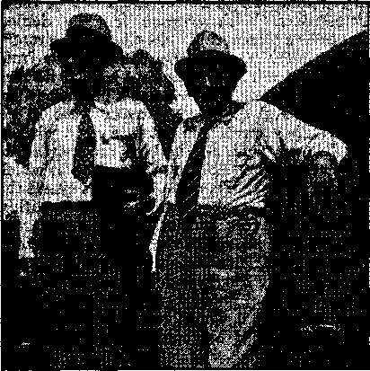

Contents
Under the Totalitarian Flag
In the City of William Lloyd Garrison
New Government
Still Some Liberty in Brooklyn
Counsel by J, F. Rutherford
South Africa
The Black Mau in His Native Land
Not All Successful Men Are Money-mad
A Serious Misunderstanding of Scripture
Published every other Wednesday by
WATCHTOWER BIBLE AND TRACT SOCIETY, INC. 117 Adame St., Brooklyn, N. T., U. S. A.
Editor Clayton J. Woodworth
Buelneia Manager Nathan H. Knorr
Five Cents a Copy *
11 a year In the United States
31.3S to Canada and all other countries
. NOTICE TO SUBSCRIBERS
Remittances: For your own safety, remit by postal or express money order. When coin or currency Is lost in the ordinary mails, there Is no redress. Remittances from countries other than those named below may be made to the Brooklyn office, but only by International postal money order.
Receipt of a new or renewal subscription will be acknowledged only when requested. Notice of Expiration is sent with the journal one month before subscription expires. Please renew promptly to avoid lose of copies. Send change of address direct to us rather than to the post office. Your request should reach us at least two weeks before the date of Issue with which It 18 to take effect. Send your old as well as the new address. Copies will not be forwarded by the post office to your new address unless extra postage is provided by you.
Published also In Afrikaans, Bohemian, Danish, Dutch, Finnish, French, German, Greek, Hungarian, Japanese, Norwegian, Polish, Portuguese, Spanish, Swedish, Ukrainian; also special Australian edition In English.
OFFICES FOR OTHER COUNTRIES
England 34 Craven Terrace, London. W. 3
Canada 40 Irwin Avenue, Toronto 5, Ontario Australia 7 Beresford Road, Strathfleld, N.S.W. South Africa £23 Boston House, Cape Town
Sintered as second-class matter at Brooklyn, N, Y*, tinder the Act of March 3, 1879.
Appetizers 1
Bargain Day '
Rabbi: Father, you have something in your service that I have always envied.
Priest: What is that, Rabbi?
Rabbi: The confessional.
Priest.: Tomorrow is confession day. Come and sit in the box with me.
The rabbi was there when a young lady came to say: “Father, I have come to confess that I have sinned three times.”
Priest: My daughter, are you sure you have sinned only three times?
“Yes, Father, only three times.”
Priest: Give me ten dollars and go and sin no more. ,
The next was a young man, saying, "Father, I have come to confess that I have sinned three times.”
Priest: My son, are you sure you have sinned only three times? Give me ten dollars and go and sin no more.
An urgent call came for the priest. Leaving the box he turned to the rabbi and said, “Rabbi, you see how we carry on. If one comes while I am away you listen to the confession.”
Soon a young lady came to the box and said, “Father, I have to confess that I have sinned one time.” ,
Rabbi: Vot, only one time?
“Yes, Father, only one time.”
Rabbi: Veil, I tell you vot you do. Give me ten dollars and go and sin two more times. Ve have a special on today: three for ten dollars.—As narrated to D. F. Johnson, Florida.
High Finance
The minister arose to address his congregation. “There is a certain man among us today who is flirting with another man’s wife. Unless he puts five dollars in the collection box, his name will be read from the pulpit.”
When the collection plate, came in, there were nineteen five-dollar bills and a two-dollar one with this note attached: "Other three payday.”—New York Dairymen’s League News.
The Embamtted P«r«ot>
Mose :-Rastus say Pahson Brown done kotch him in Fahmer Smith’s chicken coop.
Zeke: Boy! Don’ Rastus feel ’shamed?
Mose: No, suh. De pahson am de one who feel ’shamed. He can’t ’splain how he done kotch Rastus dar!
“And in His name shall the nations hope.”—Matthew 12:21, A.R.V.
Volume XXI Brooklyn, N, Y.F Wednesday, April 17, 1940 Number 337
UNDER complete control of the Roman Catholic Hierarchy, school boards throughout the country continue to lash little children because they obey God and refuse to salute the flag. One such board, in Roseburg, Oregon, finds these words of some hireling judge excuse for their action: ■‘Practices in the name of religion that are contrary to approved canons of morals or that are inimical to the public welfaye will not be permitted even though done in the name of religion.” (Supreme Court of Florida, June 1939, 190 So. 815, 816) Thus this board, although dictated to by a foreign power, sets itself up in a virtuous light before the people as protectors of American principles.
These boards, often run by old women who may wear pants but are not really worthy of masculine garb, remind one of a great bully with a bold, belligerent expression whipping little children with no fear that one of these little ones might fight back. How bravely before the kids this bully rants about lack of patriotism and how with the flogging rod he will instill patriotism of the variety he approves! How importantly he boasts of the great need for inculcating love of country by means of forcing the views of the school board on the pupils I Those who do not accede to the views of the school board will suffer dire consequences, because the school board is always right. His lash strikes again on the tearful ' child. “The switch will teach you little Jehovah’s witnesses some sense.”
All of this happens, of course, around school, where the board’s word is law. But many red-blooded Americans wonder how this board acts when confronted by an adversary to American principles who can fight and is striving to destroy the country. Kids who stand for honor and for God could never do anything but enhance the country in which they live. But granting that they are a detriment, which is untrue, is it not of value to observe how sincerely this same board, howling so vociferously about patriotism, acts in following through with its avowed program of saving the good old U.S.A.? Fortunately we are furnished with an example of a powerful enemy, an agent of the Hierarchy, who “in the name of religion” is carrying on a campaign “inimical to the public welfare” and we may see what the super patriots of the school yard are doing about it. “Father” Coughlin has for some time past been howling to turn the country over to the Nazis and recently has been implicated with the “Christian Front” in their efforts to start an armed insurrection. The action of the “Christian Front” was the direct result of Coughlin’s frequently repeated radio appeals to “use bullets” in “Franco’s way”.
Remembering what Franco did to Spain and the further fact that Coughlin has a national following and the backing of the pope, who is in league with all the totalitarians, it is apparent that his Nazi-Catholic party is a real menace hiding behind the cloak of religion. Besides this the Hierarchy has openly declared itself in favor of the “corporate state”, which means nothing more than the totalitarian state, Hitler brand. Now, in the face of this impending danger, what do we find the “patriotic” school boards doing-? Are they sounding the tocsin in warning against Coughlin and recalling that America was founded mainly by those who sought escape from persecution by the Roman Catholic Hierarchy? Are they teaching the children how their courageous forefathers stood out against the Papal wolf? Do they tell the children that the Roman Catholic Hierarchy has ever been the foe of freedom and that the twisted, burned and tortured bodies of her victims who dared to disagree with her dictates bear more eloquent and terrible proof that America, whose flag once symbolized freedom, is faced with extinction? Do these boards sound the cry that destruction is ahead? The answer is, emphatically, No.
Like all bullies who have always stood for the entrenched interests, these school boards, who strut before the children, cower before a powerful antagonist. Here is the proof. The Hierarchy knows her history is such as to make a decent man recoil in disgust, and that in order to make more Catholics it is necessary to present herself in a glorious light, especially to the impressionable minds of the children. Therefore her Catholic Action party, led by the N.C.W.C., has prepared ‘Qiistory” books glossing over any criminal actions in her past record, or omitting these altogether, and thus substituting falsehood for fact and depriving the students of knowledge they are entitled to have, especially in these perilous times, when freedom is threatened on every side. What have the august school boards done to prevent their charges from being inoculated with such distortions and lies? Have they stood out for America and truth? The answer is, emphatically, No. ■
Before the Hierarchy they have lain down as meekly as a lamb and given those under their care the poison of the Hierarchy’s concocting. What about the flag to which they attach so much importance? Should it not be protected from such propaganda nurtured in monasteries and nunneries, which are an outstanding disgrace to decency? Should the horrors of the Inquisition be kept from these children so that they might become the easy dupes of demagogues like Coughlin, who makes rosy promises in order to lead the ignorant to the slaughter in “Franco’s way”? Should they not be told of Catholic; outrages throughout the centuries, so that they could choose whether to subscribe to that brand of religion at least with their eyes open? Are not these brave child-beaters betraying every trust of decency by their subserviency to a power which hates freedom and says so?
So we see what the bully does when he is forced to either shut up or fight. He can bluff the children, but when the Hierarchy tells him what to do he jumps to it like a dog to the voice of his master. The school boards “defend” the country from little children arid then lie down before powerful opponents. They slink away like yellow-bellied coyotes slipping away into the brush at the first threat of danger. Had these “teachers” lived in the days of the American Revolution they would have been Tories whipping the children because they did not salute the king and persecuting them because they did not fight with -the redcoats. At least they would have tried this until George Washington and some of his men came.at them, and then they would have run like the proverbial turncoat. The men of Valley Forge would have made short work of . these roosters.
Let us examine some “history” books having nation-wide circulation among the schools, to see if the above charges of omission and falsification are not correct. The Story of Nations, by Lester B. Rogers and Fay Adams, both of the University of Southern California, and Walker Brown, director of instruction of Central Schools of Los Angeles, purports to be a review of world history. This book is accepted throughout California, Texas and other states as recommended instruction in secondary schools. Similar books are in use in Oregon, New York, Georgia, Illinois, New Mexico, Colorado and many other states. Note the subtlety of the introduction:
To the Readers of This Book. The youth of today, growing up in the modem world, needs not to travel far to find things about which he wants to know more. ... He wants to know why there are different kinds of religions. Perhaps his desire to team may lead him to wonder why there are so many nations in the world speaking strange languages : French, Spanish, German, Russian and others so different from his own. He is eager to know the story back of these and many other things. No longer like a child, is he willing to take this world for granted. The truth of the saying dawns on him that “the roots of the present are deep in the past”. . , .
Within the covers of one book it is not possible to tell the stories of all the nations, not even the complete story of any one great people. The attempt is not made in this book. Rather it is the purpose of The Story of Nations to pass in review before you, like a pageant, the people of each nation presented. We shall dip back into the past to see how the nations began. . . .
This Story of Nations is presented to you with the hope that it will give you a clear understanding and a real appreciation of the peoples of other nations in this modem close-together world. . . . [Initialed by the authors.]
The obvious purpose of this introduction is to capture the confidence of small children, who will accept the above statements on their face value and begin to delve into what they ' think is an unbiased account of the past. It is intended, for acceptance by those who have nothing with which to compare it. This meth-
od of misinstruction is based on the Hierarchy’s rule that if given a child in its formative years it will seldom be relieved of the Catholic blindness and religious yoke thereafter. The term misinstruction is used advisedly, as the following excerpts will prove. In the chapter dealing with Martin Luther and the Reformation one paragraph, entitled “Luth-er Is Called to Account”, has this to say:
Lather was called to Rome to explain his statements, but he refused to go. A council of the church in Germany then gave him an opportunity to recall his statements, but he again refused. Finally he was excommunicated, or completely cut off from the church and denied its privileges. Thus what started with criticism within the church itself ended in a complete break with the church by Luther and his followers.
Reformation leads TO STRIFE AND DISAGREEMENT. But breaking away from the control of authority led to trouble. For hundreds of years the Catholic
Only a flag-waver could do it
Church had offered the people the only means of worship f\>r the people of Europe. Now opinion as to what was right and wrong, as well as to the best forms of worship, were questioned. Men were so positive about their own opinions in religious matters that their sharp differences led even to war. In Germany conditions were worst. For thirty years religious wars were fought which plunged the many little German states into bloodshed and destruction. These bitter religious disagreements did much to delay the final union of the German people into a strong nation. For this reason the many small German states remained without a central government until years after the great European nations had been formed.
Under “Other Leaders Established Religious Sects Which Find Their Way tO-America”, one quarter of a page disposes of Knox, Calvin and Wesley, while Cranmer and Tyndale are not even mentioned. Nowhere in the book The Story of Nations is the Inquisition mentioned. Nearly a full page (page 281)
APRIL 17, 1940 is devoted to the exploits of Ignatius Loyola, founder of the Jesuits, of whom it is said, “Through their influence some of the peoples who had turned Protestant were brought back to the Catholic Church.”
Further on the same page:
The pope began a reorganization of the government of the church and insisted on higher standards on the part of the clergy and the correction of undesirable practices. At the same time a great church council was established to safeguard the name of the church. In these ways the church recognized the spirit of the times. England, parts of Germany, Switzerland, and the Scandinavian countries were in large measure lost to the church, but the rest of Europe remained Catholic. This movement within the church was also carried to the New World.
Another chapter, entitled “The English Become a Prot-E ST ANT NaTIO N”, deals in the same light way with the Protestant cause and tells nothing of the horrors of the Roman
Catholic Inquisition, in which men were forced to acknowledge all manner of un-Scriptural and un-Christian rites .of Roman Catholicism or suffer death by lingering fire, be slowly pulled apart by the cruel rack, or be pinched to pieces with forceps. These truths would prevent many little children from ever becoming Catholics; so this must be carefully excluded. When the Lord had any message of instruction to give the Israelites the children were commanded to be present just like the grownups, and received the message alike. Those calling themselves “teachers” would do well to recall this, and not feed the kids such Catholic slop.
The. authors are educated men and women, and they well know that their account of historical events would insult the intelligence of any reader familiar with history. But children want to play, and they do not have the
desire to check up on the facts; nor do they even suspect the necessity to do so. To them this is the history of the past. They get the impression that the Protestants did wrong to break away from such a “wonderful and benevolent” organization as the Roman Catholic Church. The Story of Nations even uses the Catholic custom of calling the Roman Catholic church “the church” and “mother church”, further befuddling the mind of the youngster. This is done in spite of the fact that at least 75 or 80 percent of these children are Protestant. But nothing shall be put in their way to prevent their espousing the Catholic “faith” if they later desire to do so. In other words, these honored authors did the bidding of the Roman Catholic Hierarchy by apologizing for any “slight errors” of the most beastly organization that has ever dishonored Jehovah on the face of the earth. Speaking of this same “church” the Lord states her fate:
"The hail shall sweep away the refuge of lies, and the waters shall overflow the hiding place. And your covenant with death shall be disannulled, and your agreement with hell shall not stand; when the overflowing scourge shall pass through, then ye shall he trodden down by it.”—Isaiah 28:17,18.
Thus will the Hierarchy go down, and all the lying teachers who do her will!
The above is sufficient proof that the teachers do not hold the American flag in any regard or they would inform the children correctly as to why America was founded to give real freedom. Remembering how our forefathers suffered for breaking away from Catholicism, teachers would be loath to abuse little children who are' doing much like Washington and the Minute Men, who stood in the face of strong odds for what meant freedom and liberty to worship. They would not beat or otherwise abuse a child for obeying the dictates of his conscience.
Even fair worldly newspapers which have little regard for Jehovah or His Theocratic Government, which will bring all blessings to the obedient, well see the wrong of this enforced flag salute. The Dallas Morning News, issue of February 12, states:
SALUTING THE FLAG
For the great majority of Americans, the saluting of the Stars and Stripes—as done daily by soldiers and sailors and on special occasions by civilians— is a normal and unobjectionable expression of patriotism that does not in any way conflict with their religion. But a few small sects persist in finding compulsory salute of the flag inconsistent with their creed; and as a result, children of their members have on various occasions been thrown out of the public schools and thus deprived of the education for which' they help to pay.
These children, when they refuse to salute the flag, are, of course, only carrying out teachings they have received from their parents and pastors. Their parents, in general, are good citizens of long standing, even though their peculiar view of the relations of flag-saluting to religion seems irrational to the majority. It seems hard to justify the stand of those school boards that regard patriotism as something to be forced rather than taught, and that punish innocent children for the conscientious objections of their parents.
In Philadelphia recently, the United States Circuit Court of Appeals invalidated the -flagsalute. law of Minersville, Pa., under which two children of members of Jehovah’s witnesses had been expelled from school. The school board has declared that it will appeal this decision to the Supreme CouA. If this is done and if the Supreme Court consents to review the case, the authority of public school officials in overriding the conscientious objections of pupils and their parents may be determined more clearly than is now the case.
A recent publication entitled The Catholic Crisis contains full and convincing proof that the Hierarchy of the Roman Catholic Church controls all national publicity agencies and news agencies, with few exceptions, in the United States; and that the Hierarchy is in league with all the totalitarians, Hitler, Mussolini and Franco, who are also allies of Stalin of Russia. World ruin is their program.
In view of these conditions, which were foretold by the Scriptures, is it not essential that the children be given the real history of Catholicism, that they might know what to do now? Every American is threatened by the totalitarian nations, as they are bent on getting control of all the earth. Would not the teachers better protect the welfare of the United States by informing the children that Rome and Catholic Action back Hitler and the other murderers who are destroying Europe, and tell them what Nazism will bring here, as is grimly envisioned by the following press account? Is it children who prefer to obey God rather than men who menace the country, or is it the Catholic Hierarchy, that would like to put in America what is horribly ‘ described below?—
NAZIS TO PUNISH RADIO LISTENERS By Associated Press
Berlin, Jan. 27. — Roland Fr eisle r, secretary of state in the justice ministry, today admonished all German law enforcement agencies to deal consolation
severely with persons found listening to foreign broadcasts in violation of an order issued last September. Writing in Deutsche Justiz, official organ of the nation’s judges, lawyers and court officials, Freisler said that judges had no alternatives to meting out penitentiary sentences to violators, with death in the most flagrant cases.
Teachers and history inventors are both eager to kiss the Hierarchy’s toe. School boards approve stuff dished out to the kids in the name of history in which the unspeakable chapters of Catholic violence have been torn out because such truths might shock the religious susceptibilities of prelates, priests and such ilk. These Scriptural “whited sepulchers” may continue to beat the children whose members will form the race which will never die, and abuse them for a time. They may also cower in abject submission to Rome while hollering loud about the American flag, and remain undetected for a while. But when these skirted sissies face the Executioner, who is Christ Jesus fighting for the name of Jehovah and the oppressed peoples of earth, they will go down like weeds. “And the slain of the Lord shall be at that day from one end of the earth even unto the other end of the earth: they shall not be lamented, neither gathered, nor buried; they shall be dung upon the ground.” (Jeremiah 25:33) Hail to JEHOVAH and His King Christ Jesus, and CONGRATULATIONS TO THE CHILDREN WHO trust in Him! You faithful children, according to the Scriptures, will rejoice in the salvation of Jehovah when your persecutors have become manure piles. (Psalm 13:5)—Elton Groves.
♦ Germany and Russia have concentration camps where men and women are committed whom the state considers dangerous, whose consciences it cannot control. Is Massachusetts now going to imprison eight-year-old children for identically the same reason 1”
This week our local court decreed that a family of children, one of them eight years old, should be taken from their parents and committed to the Hampden County Training School [because they conscientiously refuse to salute any flag].
i Where then rests the responsibility for breaking up that home and taking those children from their parents and committing them . to a house of correction?
The responsibility rests squarely on the shoulders of our legislators, the men who passed the law originally and who refused to repeal it this year.
One wonders if these legislators think that this training school can force those children to act. One wonders whether corporal punishment or the denial of food or what other institutional means may be used at this training school will force the children to do as these legislators have decreed. I’d like to know what method is now going to be used to make these children obey this law. For'obviously the sole justification of taking these children from their home and parents and committing them to this institution is to compel them to obey this law. Compel them how ?—Robert J.
APRIL 17, 1940
Raible, Unitarian pastor, in an address in Greenfield, Massachusetts, as reported in the Springfield Union.
♦ Those interested in coming to New York city on shopping tours, and adequately impressed by newspaper and other advertising as to the advantages to be obtained by making their purchases in the metropolis, should be interested in the report of William Fellows Morgan, Jr., as to his experiences on a sevenhour shopping tour. Morgan, who happens to be the city commissioner of markets, made five purchases and was surprised to find that he was cheated on every purchase. In women’s clothing stores he bought three pairs of “pure silk” women’s stockings which were found to be cheap substitutes; at a filling station he purchased five gallons of gas, which measured one pint short. At a butcher shop he bought two chickens, each of which was one-fourth of a pound short, and, to add insult to injury, the dealer had a sign in his window advertising chicken at 16c a pound, but sold it at 18c. Mr. Morgan was surprised that the businessmen of New York are so crooked, and at least five businessmen were surprised when they were handed summons to court and discovered that the jig was temporarily up. One naturally wonders if other cities have as many crooked merchants as New York, and if not, why not. Also, if there are any honest merchants in New York or elsewhere; if so, why,
7
UNDE THE TOTALITARIAN
WHY WERE THE JEHOVAH WITNESSES MOLESTED LAST SUNDAY AND THEIR PEACEFUL MEETING AT MASONIC HALL QUESTIONED?
IS THE CITY OF WILLIAM LLOYD GARRISON FAME UNDER DESPOTIC RULE?
I wonder if there is freedom of speech here in Newburyport as granted by the constitution of the United States; or are we having a preview of the dictatorship methods used by the European countries ?
When attempts are made to break up a peaceful Sunday meeting and police officers are stationed outside the entrance of a building to intimidate anyone desiring to attend the meeting, it is high time that Newburyport liberty-loving citizens look into the situation.
Masonic Hall was hired for a meeting of Jehovah’s witnesses last Sunday. They paid for it in advance. Sunday morning more than 200 witnesses from greater Boston and vicinity visited homes in this city and Salisbury to extend invitations to attend a public lecture on “Government and Peace” to be given at three o’clock Sunday afternoon.
The talk, based on Bible prophecies, exposed the forces that are now trying to undermine the American Democracy and establish a dictatorship in this country similar to those already existing in many countries of Europe.
At noon, former city solicitor Malcolm Ayers, who heads the Masonic Building Association, notified the janitor, John Wills, that he would have to cancel the contract for the hall. He had received protests from certain people opposing the meeting. .
Since the lecture had been extensively advertised throughout Salisbury and Newburyport at some little expense, Henry G. Judson, of Fairhaven, refused to accept the cancellation of the contract and would not take the return of the money. He pointed out that there had been a peaceful assembly of the witnesses at the hall in the morning and there was no possible reason for the cancellation based on the actions of the witnesses at the hah. ......
Mf. Ayers then called police to aid him in forcing the cancellation of the hall and eject the witnesses from the building. The witnesses then sought the protection of the state police, at the state headquarters on Commonwealth pier. They were advised that they could bring charges of assault against any persons, police officer or otherwise, who laid hands on them to eject them from a peaceful assembly where there was no question of a disorder. As Jong as they had paid for the hall they had the right to remain there.
When Attorney Ayers arrived at the hall with three local police officers, Henry G. Fenders, Clinton S. Nason and Eugene Sullivan, a Bible study was being conducted as part of the convention activities.
“’You seem to be a very orderly people here,” Mr. Ayers told Mr. Judson in some surprise. “I was told there was going to be a riot and that the building might be damaged.”
When he was assured that Jehovah’s witnesses were assembled for the worship of God and to study Bible prophecies in the light of recent world events, and that any disturbance would be caused only by outside forces seeking to disrupt their peaceful meeting, Mr. Ayers stated that he would withdraw his complaint. However, the three police officers remained in the cruiser outside the entrance to the hall throughout the meeting.
Mr. Ayers, who were the people who complained? Were they heroes of the past?
The Police Department is supposed to be for the protection of citizens. Why not run a course of instructions this winter to teach our police force their duties ? Had it not been for the State Police, Newburyport might have been the laughingstock of the state. As it was, the Boston Globe, last Wednesday evening issue, refers to the episode in an uncomplimentary manner in its editorial column.— The Newburyport (Mass.) Liberator.
♦ Obsessed with the idea that spies and traitors and public enemies are invading Burlington with evil designs, Mayor Burns is fighting a war all his own these days. One of the major battles to date occurred last Saturday, when the mayor succeeded in preventing . . . Jehovah’s witnesses from holding a meeting in the city hall, though they did meet in the Knights of Pythias hall, according to reports.
The preliminaries of this affair occurred some two weeks ago, according to the story, when a local man approached Mayor Burns and engaged the city hall for this meeting. The city's vociferous chief executive is reported to have declared, “We treat 'em all alike," and granted permission for the meeting. The sum of $15 was paid to the city treasurer later to bind the bargain.
Saturday evening came, and with it the witnesses to hold the meeting. Meanwhile protests had reached the mayor, so he says. So the witnesses were subjected to questioning, one of them was held temporarily on suspicion of being a spy, but was later freed after investigation, and the permission for the meeting was withdrawn and the money refunded.
The reason given for denying use of the city hall, after it had been granted, was that opposition and dissension had been aroused in the city. That was the reason, if we remember correctly, given by Mayor Hague why a certain labor organization to which he objected was not allowed to meet in Jersey City. Upon appeal to the Supreme Court of the United States, it was later established that Mayor Hague had no authority to refuse permission for such a meeting.
Grant, however, that Mayor Burns and his associates on the finance committee have authority to deny use of the city hall. In doing so on this occasion, they have raised the question as to whether Burlington is to be included among those cities which deny the right of free speech, freedom of religious worship and free assembly under the Constitution.
The Free Press has no great interest in this organization called Jehovah’s witnesses. We doubt if it has many followers in Burlington, or that it would have created much of a stir by holding a meeting in the city hall or anywhere else in the city. But its right to meet, so long as the assembly was peaceful, is so well established under the Constitution of the United States that anybody who attempts to prevent such assemblies may be suspected of a misconception (to express it charitably) of the form of government under which we live. ,
Mayor Burns did not see fit to disclose what organizations or persons entered the protest which resulted in his Saturday night activities in this case. In a matter of this kind, those under suspicion are entitled to be confronted with a public declaration of the sus-
APRIL 17, 1940 picions and the names of those who suspect them.
There are some indications that our mayor thinks the United States is on a war basis, and that a local emergency exists which requires a dictatorial form of government in Burlington, with all constitutional provisions suspended. If he has such an idea, we respectfully suggest that he take a day off from looking for spies around every corner and spend it reading the Constitution, the Bill of Rights and perhaps the City Charter.
If he will do this, perhaps we can avoid the necessity of setting up a concentration camp within the city limits before war is actually declared.—The Burlington (Vt.) Free Press.
Burlington Stung by Crooks
♦ The mayor of Burlington, Vermont, who distinguished himself as an “American” by returning $15 paid him by Jehovah's witnesses, and refusing to rent them the city hall, after they had advertised their meeting, admitted that in one instance he had let an organization have the city hall free and the city had been stung to the tune of $32 for a water bill which such organization incurred. Quite likely it was this same organization that pushed the mayor to repudiate his contract.
♦ The proposal to incorporate in the new relief bill a provision that all WPA workers shall take the oath of allegiance to the United States is about as sensible as the oath this state now requires of teachers. The intention, we are told, is to protect us from the machinations of the Communists, who are plotting to overthrow American institutions by force or guile.
Does any sane person believe that a man meditating the betrayal of our republic into the hands of Stalin, or perhaps Molotoff, will balk at a little thing like a bit of swearing?
As a loyal Marxist, such a man would not believe in oaths anyway. “Religion is the opium of the masses." On the other hand, there must be among our WBA workers, as in the teaching profession, persons of such high principle" as to resent being singled out as members of a suspicious class. Their objection, as in the case of the non-juring teachers, is not to pledging loyalty to the republic, but to being required to give a pledge not required of their fellow citizens.—Boston Herald. .
9
Two bright young women of Bridgeport had an idea. They ihade some homemade nuns’ garments and trailed in and out of New York as commuters, panhandling in the
Usual manner after arrival. They did a good business, raking in $15 to $20 a day, which shows what this particular form of graft nets the workers. Unfortunately for them, somebody tumbled to their racket in Bridgeport, telephoned ahead to New York, the ladies were followed, and the jig was up. They could have worked their racket all right if they had split up with the rest of the gang. But this business of hanging on to the whole 100 percent of the money taken in would never do; so they were arrested for obtaining money under false pretense, which was quite right. The whole thing is a swindle, from top to bottom.
♦ The Santa Barbara (Calif.) News-Press states that the widow of E. L. Doheny was made a Papal countess by Pope Pius XII. It also states that before his death her husband had been a Knight of St. Gregory, the same as Martin T. Manton, and a Knight of the Holy Sepulchre. It will be recalled that this is the Doheny who sent $100,000 in cash in a black satchel to Albert L. Fall, when the latter was secretary of the interior. The Government found Fall guilty of receiving a bribe, but nothing was done with the Knight of Saint Gregory, the Knight of the Black Satchel (full of bribes), and the Knight of the Holy Sepulchre, except to take back the oil lands which belonged to the people. . ’
♦ The first time a plenary indulgence was given to anybody over the radio was on August 24, 1939; but even if you heard the gibberish from Vatican City, that doesn’t mean that you got a blessing. You positively didn’t get one thing in the way of a “blessing” unless you kneeled before your radio receiver. That is all explained by the National Broadcasting Company; and if they don’t know who gets “blessed”, who would?
♦ On the streetcars of New Orleans, Denver, Houston and San Francisco nuns travel free. When they come back after one of their begging campaigns they are out not one cent.
10
♦ In the Chicago stockyards there is employed a trained bull, whose job it is to run down the incline, followed by the cattle that are to be slaughtered. The bull by rights should have lace pants and a collar which buttons on the back. He has a niche in which he slips for safety while the cattle press on to be slaughtered.
The London Catholic Universe, a month after the war started, told of the care that is taken to protect the trained bulls, in the following statement:
Theological students, defined as follows, have been added to the schedule of reserved occupations:
Theological student: a man who was before September, 1939, established in his course as a student at an institution recognized by any religious denomination as a training institution for holy orders or for regular ministers of that denomination, while he continues as such a student and intends to qualify for Holy Orders or for appointment as a regular minister. ,
Men in Holy Orders and regular ministers of religious denominations are exempted from military service under the National Service (Armed Forces) Act, 1939. The new entry in the schedule of reserved occupations accords reservation to men who before the outbreak of war were established in their courses as students at recognized institutions for the training of men for Holy Orders or for the ministry of the Church.
♦ The New Orleans Tribune said:
It is time now to consider the handbill and pamphlet issue as settled, and for the hard-bitten aidermen, mayors and police chiefs who have constituted themselves censors of the job presses of the country to give up the fight. It is just no use. They are going to have to grit their teeth and give their political critics and opponents, among others, free handbill access to the publie, ,
New Orleans has had its full share of arrests for distributing printed matter to which somebody objected. We should have no more of sueh petty tyranny henceforth.
“The Dead Know Not Any Thing”
♦ The Scriptures say that “the dead know not any thing”; and therefore there is considerable public interest attaching to the headlines of the New York Herald Tribune, “Crowds Pray to Woman Who Died in 1881.” The woman, known as “Mother Mary Mazza-rello”, was beatified by the late Pope Pius XI; hut that means nothing, not one single thing, except a sin of presumption on his part against Jehovah God.
consolation
I used to be a so-called “mass server”. My duty, until I was seventeen years old, was to follow papa around, hand him his wine, and then run around and hold his tail up, and ring a little bell while papa was 'making blood out of the wine’. It was the funniest blood I ever saw; with all his mumbling it still smelled like wine.
Do you know that mass is no good unless it is said over the “bones of saints”? Here is how it is done. In the center of the altar is a square inset cut about ten inches each way, with an inch drop, making room for a marble plate 1 inch by 10 inches by 10 inches. When the plate is in place the altar surface is level, and with the altar cloth on, the plate is not noticeable. In the center of the marble plate there is a square hole two inches across, and in this hole are placed some bones of dead “saints’'.—Ray Hann, Illinois. '
♦ The Focus, New York city, contains a reproduction of the statement issued to Joseph Kiaszeh, a miner working for some unidentified coal corporation in Jefferson county, Alabama. Around the company town in which he lives is a cordon of armed guards to keep organizers and newspapermen from entering. The statement shows that in a certain half month Joseph mined 102 tons of coal, for which his compensation at S3 cents per ton would have been $33.66 if he had been paid in cash. But he was charged $4.40 for powder, 50 cents for smithing, $9.77 for supplies, $5 for rent, $2,50 for coal, $4 for store, 55 cents for taxes, $1 for union dues, $1 for union assessment, 50 cents for collection, and $1 for the priest. Allowing that Joseph paid all these charges, overcharges, grafts and swindles, including the $1 for the priest, for which he got nothing in return, he would still have had $3.44 eoming to him; but the deductions were added up wrong, so that he was swindled out of 34 cents (one percent of his gross earnings), and his net cash reward for a half month's work was $3.10. To round this picture out nicely it would have been in order for a couple of black scarecrows to have been waiting at the pay window with their hands stretched out from beneath their maternity gowns to split between them what Joe had left. He could have paid over $1.55 to each of these birds and gone home to his family feeling that APRIL 17, 1940 he was what he was, a poor duped, robbed, swindled, lied-to, deceived and oppressed member of the Catholic population.
It Just Ain’t So (?)
♦ New Orleans.—Evasive “whispering campaign” gossip to the effect that Archbishop Joseph F. Rummel of this city and other members of the Catholic clergy are in any way implicated in the Louisiana “hot oil” scandal was scotched by a statement by O. John Rogge, assistant U. S. attorney general, who is conducting an investigation into the scandal. Rogge said that no investigation is being made of the archbishop and that nothing involving him had come to light. Archbishop Rummel also gave the lie to the gossip in an indignant public statement.—Altoona Register (Roman Catholic).
Shriving the Pater
♦ Recently the daughter of one of the Jona-dabs connected with the Cambridge company of Jehovah’s witnesses was riding home to Watertown on a crowded streetcar, in company with her girl friend. As they tried to work their way up through the aisle of the car her girl friend inadvertently crowded rather abruptly against a priest of the Catholic church who was standing in the aisle. Turning rather sharply to her he said: “Young lady, do you know who I am ? I’m a 'father’.” “Congratulations !” was her prompt rejoinder. That closed the incident.—William B. Fowler, Massachusetts.
Why All the Rush?
♦ For more than 150 years honest Americans have obeyed the law without being compelled to salute the flag. WThy the zeal now to compel flag-saluting?
The reason is that the same powers that caused Fascism and Hitlerism to seize control in Europe are moving to control American institutions and the compulsory flag-saluting is but a part of that program.—E. C. Anderson, in the Bridgeport Post.
Seems Reasonable
♦ When you have little children of' eight years of age and they do not salute the flag, and you send them off to a prison camp, that does not represent the highest form of democracy.—Dr. Anton J. de Haas, professor of international relations at Harvard University, in address in North Adams, Massachusetts.
(To be continued}
♦ The witnesses throughout Australia assembled in Sydney for a united convention to coincide with the New York convention. Application was made for the Sydney town hall, and it was refused. This action, as in the case when Judge Rutherford was here in person, resulted in plenty of newspaper publicity, and the subject was again the topic of conversation throughout the city. Sir Benjamin Fuller, one of the few lovers of freedom among the peers, read of the banning of the town hall and voluntarily offered to hire one of his theaters for the occasion. A real service convention was held there, and both of Judge Rutherford’s speeches, “Victory” and “Government and Peace”, were received with remarkable clarity. Even though the public lecture came through at six o’clock on Monday morning, a good crowd assembled in the hall to hear it. Everyone was tense as Judge Rutherford announced: “The Catholics and the Nazis are trying to break up this meeting, but, by God’s grace, they cannot do it.”—-1940 Yearbook of Jehovah’s witnesses, pages 105, 106.
♦ While out in the country witnessing with my mother, brother and two little boys, we saw three little homes far up on the mountain. We made two attempts to reach them with the car, but each time something stopped us. My brother said, “The Devil must know there are some people of good will up there and wants to keep us away from them.” With that my son Billy, aged 8 years, and I decided to walk. We had about a mile of very bad roads. Results : Ten listeners, 1 Salvation book, and 10 booklets; made an arrangement for all three families to meet for a lecture; took an order for a three-book combination and had the joy of looking into the sparkling eyes of my son Sind hearing him say, “Boy' I’m glad we walked up here.”—Mrs. R. G. Young, Virginia.
♦ During a visit at a friend’s home, trying to get him to renew his subscription for Consolation, Judge Rutherford’s name was mentioned and a woman present said, “Rutherford ! he is no good; he is a Red.” I said, “You are mistaken.” She said, “Two of those persons came to my door, suggesting that I turn Communist.” I replied, “They were not Jehovah’s witnesses, if that was their mission; you are not telling the truth.” She then said, “I had two of them arrested for coming to my door”; whereupon I reminded her that the Lord said that if she did it to one of the Lord’s she did it to Him, that it is a very serious matter, and that she had no right to speak evil things of any when she had not read the books and did not know what they teach. She is now attending a Salvation study, has heard “Fascism or Freedom”, and says she is sorry, and that she was a fool to listen to what others told her.—Sybil Rogers, Fla.
♦ The city of Newcastle is the center of a vast coal-field and steel industry. Its population nurhbers a quarter of a million people. Early in May the servant of the local company made application for the city hall, in which to present “Face the Facts”, and paid over the money for the hire of the hall. An intensive advertising campaign wras arranged, and for three weeks leaflets were distributed, announcements made by sound-car and radio, and information marches conducted throughout the city. On the morning of the lecture unofficial notice was received that our engagement of the hall was canceled. No explanations were given and the notice was ignored. Advertising continued, and the civic fathers became desperate. At the scheduled time there were a thousand people gathered outside the hall, but the lights were out and an unsigned notice on the doors announced that the meeting was off. The chairman climbed on the top of a sound-car and told the crowd what had happened and that the Catholic-Fascists were responsible. All but a few parochially trained hooligans vigorously applauded the remarks and uqhestitatingly adopted a resolution protesting against the action of the mayor. A special leaflet setting forth the facts in very clear language was printed overnight and distributed to every home next day. A contingent of 100 publishers came by boat from Sydney to join in the fray and help with the work.
Jehovah’s Kingdom publishers in Rio de
Janeiro, Brazil—a Hierarchy stronghold
Public opinion in Newcastle during the succeeding weeks showed clearly that the mayor's action of suppression was not at all appreciated. Thousands of persons signed a petition to hear the lecture in the town hall. Later application was again made, this time for the lecture “Fascism or Freedom”. The council in considering the matter voted 18 to 2 in favor of our having it. A good crowd heard the lecture at the city hall, and although there were a number of hooligans sent there by the Catholic priests, they were too afraid to do anything. This was a real victory for the Lord’s army, and the Devil’s representatives have not recovered yet. [The mayor lost his job since.]
♦ The sound-car has continued its weekly programs, bringing the gracious Kingdom message to the ears of many thousands of people. Throughout another year, still the object of bitter hatred and attempted efforts to silence it on the part of the Hierarchy’s agents, it has not once failed, with the Lord’s help, to give its scheduled programs. On “AH Soul’s Day”, called in Brazil “The Day of the Dead”, the car, with about half a dozen publishers, visited the cemeteries, gave appropriate lectures, “Where Are the Dead?” “Purgatory," “Resurrection,” “Jehovah,” and “Riches”, to more than 43,000 hearers, and the publishers placed considerable literature, among which were more than 200 booklets Where Are the Dead?—1940 Yearbook of Jehovah's witnesses, page 118.
A Catholic priest complained to the author-
APR1L 17, 1940 ities that the little band of less than a dozen humble Polish and German fanners who were calling on their neighbors with the gracious news of God’s kingdom of righteousness, which exposes the crookedness of the clergy, were “endangering the Brazilian government, circulating seditious literature”. Their literature was seized and sent to Porto Alegre for investigation, and every time the publishers started out in the service their literature fell into the hands of the police immediately. From Porto Alegre an intercepted registered letter of instruction to the witnesses from the Sao Paulo office as to how to proceed was sent to Sao Paulo with orders to “investigate" the activities of the Society and make a report. The officer of the Bureau of Investigations into whose hands the order eame was Visited by two Catholic priests who offered to bribe him to, make an adverse report and close the Society. Being an honorable man who knew of the work, having heard the sound-ear programs, he came directly to the branch office himself rather than trust any subordinate who might yield to bribes. A report was made stating properly the nature of our work, and the further report that we were being persecuted by the priests. A formal protest was made, and the literature was requested returned. After some months’ delay the literature was returned, the delegado who had interfered was removed, and the witnesses have been given a written statement that no officer within the jurisdiction of the present delegado shall in any wise interfere with the work of Jehovah’s witnesses. Since that time the work
13 is going ahead in Rio Grande do Sul, the people of good will are showing themselves, and the publishers are manifesting greater zeal and activity than ever before. Three of them are entering the pioneer service, and others are preparing to enter soon.
On a Sunday in December, while the soundcar was giving a program in Itaquera, a town near Sao Paulo, and a group of the Sao Paulo publishers witnessed in the town, the sound-car was seized and sent to Sao Paulo under guard and about half a dozen of the publishers were arrested, held for several hours and then sent in to the city. When we reached the Bureau of Investigation we were immediately released, treated to afternoon coffee, and the officers were rebuked for wasting the city’s money -for gasoline to transport innocent people to jail. A formal protest against the action of the mayor of Itaquera'was entered with the proper authorities, a copy of this was published in Consolagao, together with a write-up of the arrests, and another “locust attack” was made upon the town, this time with the sound-ear and phonographs using the “Enemies” record, which had arrived in the meantime. The mayor, though raging and threatening, was unable to do anything. The town was thoroughly covered by the sound-car and copies of Consolagao, much literature was placed, and the next week the mayor lost his job.—-1940 Yearbook of Jehovah's witnesses, pages 119,120.
♦ On Sunday, October 22, my wife and I walked about five miles out in the country while witnessing. We had started a Tower study with some persons of good will and were on our way home, when we decided to stop at 4 house near the bus line and witness to the people living there while waiting for the bus. We were very tired and did not feel able to walk all the way home again. I played the
Kingdom hall, El Centro, California
14
A resident of Kissimmee, Florida, broadcasts the Kingdom message from his home
record “Snare and Racket” for eleven listeners there. Then they started asking questions. I tried to answer all their questions with the scriptures from the - Bible, and all of them seemed very much interested.
Suddenly from back in the house I heard a commotion and a very excited voice ; then the lady of the house rushed out to where we were sitting, and in a very angry voice informed us that she was a Baptist herself, and that she had a leader. She said, “My pastor teaches me alj I need to know.” Then she told us, “We don’t, need none of your teachings here. You can just go on somewhere else,” and she waved her hands at us to move on. We didn’t go, however. I could see that her husband and sons were liking the message, and I had already found out that he was not a member of her church. They said he was ‘just a sinner’, but he had read some of the books and liked them fine. He and all the others were so enthused over what I was telling them about the Bible facts that they didn’t even notice that she was talking.
Finally, when she kept up her talk, I turned to her and began to ask her some questions. Very much to the amusement of her husband and the others there, I quoted to her the scripture at Hebrews 13:2 and Genesis 18; 3-8. Every question she asked to try to uphold her religion, I knocked it out with the scripture. At first she wouldn’t- believe what
CONSOLATION
Two Kingdom boys in Texas
(Every ten years they are in the work they look ten years younger. Works the same with the girls too. None of them look over 30)
I read out of my Bible. She said my Bible wasn’t like hers, so I bade her get her own Bible and read. When she first started to read she would slowly shake her head as if she could not believe her own eyes; then as she continued to read she started bowing her head Up and down, slowly at first, and then faster, as if for the first time she was really seeing something.
As some of the others started talking to me then, I forgot her for a little. The next thing we knew we smelled food cooking. As Sarah in the Genesis account, she was cooking a meal for the strangers. It was right amusing. Soon dinner was announced and she told us to be seated at the table and give thanks, for we were truly welcome.
It was very interesting, and we believe some good was done. We left four pieces of literature ; among them were Face the Facts and Government and Peace. On leaving them they told us to be sure to come back.—R. J. Norman, Pioneer.
Witness Work Renewed in Fiji
♦ The witness work has been renewed in Fiji, with Government approval, and is now in better shape than ever. The study meetings are well attended and the house-to-house work is engaged in regularly by those who love the Lord. Thousands of books are being placed.
APRIL 17, 1940
The Devil overreached himself and stuck his foot in it. ,
The change came about through the governor’s granting an official interview with the representative of Jehovah’s witnesses, at which seven points were discussed: (a) a petition of Fiji natives for the Watch Tower literature; (b) a request for information as to why The Harp of God and other publications were listed as contrary to public interest; (c) a request for information as to why the government was not prepared to state reasons for prohibiting importation of certain publications; (d) the submission of evidence that the Watch Tower is doing a good work and promoting a better citizenship in Fiji; (e) proof from the Bible that Jehovah’s witnesses, in presenting Bible truths to the people, are aiding the Empire; (f) a request for the rescinding of Orders-in-Council hindering the work of the Watch Tower in Fiji; and (g) the presentation of a petition signed by the regular attenders of meetings held in Fiji by Jehovah’s witnesses.
At the interview it was established that 40,000 pieces of literature had been placed in the colony and had not caused the slightest disturbance among the natives. Proof was also submitted from the Catholic Press that the Hierarchy opposes the Bible and yet is shielded by a government which claims to be Christian, Protestant and democratic, while true Christians are persecuted. The results of the interview were satisfactory to all concerned, and it is only to be regretted that the influence of clergymen postponed the matter so long.
♦ It was only a few weeks after the city of Memel was taken over by Hitler that two of Jehovah’s witnesses residing in that city were sentenced to two and one-half years’ imprisonment for being real Christians in a land under Nazi control.
Zone 10, Texas, in assembly
15
Still Some Liberty in Brooklyn1
Five of the Bethel boys were out on a busy street intersection in Brooklyn on Saturday, February 24, placing the message of God’s Kingdom in the hands of the people in magazine form [some had The. Watchtaiver and some Consolation] and they forgot to cable Myron or Papa to know if it would be all right.
Leafiy the cop (now, don’t ask his “church” and embarrass everybody) heard the boys saying “Read the truth about religion and see for yourself that it is the world’s biggest racket”, and when he saw the magazines going like hot cakes he forgot all about this being a democracy, and though he may have heard something about freedom of speech and of the press, and had sworn to uphold them, and be loyal to them, and defend them with his life, yet he “thought” that in some way these principles are Communism, and at the right time he should show his bringing-up and come to the defense of Papa, no matter what.
So he arrested all five of the boys; and when one of the boys over six feet tall, but less than 18 years of age, was placed in a cell with 17 criminals, one of the prisoners came up to him and wanted to know if he was in for rape.
At length the thing came into court. Leahy was placed on the stand, and when he was asked if he is a Roman Catholic his voice was scarcely audible, but he murmured “Yes”. Nobody laughed aloud, but everybody nearly died inside.
Leahy claimed that it was because they shouted too loud that he arrested them. When he was asked to show by example just how loud the boys were saying “Religion is a snare and a racket” he got so excited that he nearly lost his artificial teeth and cheeped so low he could hardly be heard. Everybody nearly died some more.
Ue was asked if it is not true that “Reverend Father” Coughlin’s “Social Justice” magazine is regularly distributed at this same location. His answer was “Yes!” and he admitted that he had not arrested any of those ' distributors. With crimson face he denied that he is a member of “The Christian Front”.
The judge on the bench nearly died from suppressed mirth, but he kept a straight face and tried to hurry the case to a finish, but the attorneys for the Watchtower were in no hurry. They wanted to get in a good witness for Jehovah God. So the boys all testified as to what they had 'said, and the voice in which they had said it. Then the judge dismissed the case and said the boys were perfectly within their rights; that it was perfectly apparent that their ideals are of the highest; that they are not criminals; that they have a perfect right to their ideas, and to present them to others, and that nobody has the right to interfere; and that it would be the best thing for the country if it had more boys of the same kind.
Jehovah’s witnesses in Central Europe
♦ The 1940 Yearbook of Jehovah’s witnesses, page 133, contains the following summary of tragic events upon Jehovah’s witnesses occurring in the year 1939;
Charges laid against publishers by police 437 Number of arrests
Prison sentences total, in years, about
Acquittals by lower or higher courts
Snare and a Racket
♦ We live next door to a mission. My youngest child was playing at the gate and one of the Sunday-school teachers asked her if she would not come to Sunday school. She said “No”, The teacher said, “You know you get a present at Christmas time, and on your birthday you sit on the birthday chair, and you get a lolly.” No, that would not bribe her. Then the teacher said, “Do you know God died for you?” Quickly the little one said: “No, He did not; Jesus our Savior died for us.” The teacher answered, “Well, isn’t he God?” My little one walked away disgusted, saying, “Jesus isn’t God.”—Mrs. J. D., in Australian Consolation. 1 .
{To be continued)
IF THE Almighty God Jehovah is the God of righteousness, why does He permit all this wickedness on the earth? Why does not God kill the Devil? and why didn’t He kill him long ago ? And why does God permit Big Business, conscienceless politicians, and religion to exploit and rob and oppress mankind?
The Devil is “the prince of this world”. The Devil’s world was symbolized by ancient Egypt. Jesus Christ was foully murdered in that world or organization, “which spiritually is called Sodom and Egypt, where also our Lord was crucified.” (Revelation 11:8) The waters of Egypt’s river Nile furnished a way of commerce. The waters of the river symbolically represent the common people which the official element of the world exploits and uses for its purpose. The king of Egypt claimed to be the absolute ruler. “Thus saith the Lord God, Behold, I am against thee, Pharaoh king of Egypt, the great dragon that lieth in the midst of his rivers, which hath said, My river is mine own, and I have made it for myself.” (Ezekiel 29:3) Pharaoh the king of Egypt was a shepherd of his own organization, and thus he pictured “the dragon, that old serpent, which is the Devil, and Satan”, who shepherds and looks after his own wicked organization.—Revelation 12:9-20:2.
Does not the Word of God say that God raised up Pharaoh? Jehovah God did not make or raise up the wicked Pharaoh of Egypt, nor did he make or raise up the Greater Pharaoh, the Devil. Lucifer long ago was created perfect and was installed by the Lord God in a position of responsibility. His covetous spirit led him to rebel against God. In Eden Lucifer declared God to be a liar, hence put at issue the truthfulness of God’s Word. God then named Lucifer Serpent, meaning he is a liar and deceiver; Devil, meaning he is a slanderer; Dragon, meaning he is a de-yourer or destroyer of that which is good; and Satan, meaning-he opposes everything righteous and is therefore the opposer of Jehovah. As shown at Job 1:10,11; 2:4-7, Satan then
APRIL 17, 1MO
defied Jehovah God to put a man on earth who would maintain his integrity toward God and remain true and faithful to God under the most adverse conditions. Thus Satan raised the issue of “Who is the supreme one of the universe?”
The name of Almighty God, the Most High, stands for true righteousness, for truth, justice, wisdom, love and power. His name means that He is above all, over all, and that all His acts are prompted by unselfishness, and His loving-kindness is toward all that do right. Therefore the controversy started by Satan involved the name of Jehovah God. Ilad God then and there killed the Devil no opportunity would have been afforded to fully prove the question that the Devil had raised, or to prove that the name of Jehovah stands for all that is claimed for it and that it is. God therefore permitted Satan to take his own selfish and wicked course, and has permitted him to go the very limit therein and until God’s due time to demonstrate to all creation that God is almighty, the Supreme One, and that His name stands for truth and righteousness, justice, wisdom, love and power. Pharaoh of Egypt was an illustration of, and stood for and in the place of, the Devil; and therefore God spoke to Moses concerning Pharaoh, but His words apply more specifically to Satan the Devil, to wit: “But in very deed for this purpose have I let thee remain, for the purpose of showing thee my might, and that my name may be celebrated in all the earth.” (Rotherham’s translation of Exodus 9:16) “But for this cause have I allowed thee to remain, in order to show thee my power; and in order that they may proclaim my name throughout all the earth.”-—Leeser’s translation.
- The Devil built Egypt by means of his earthly agents, and Pharaoh represented the .Devil. God sent His chosen people to Egypt, the Devil’s organization. God’s people being in Egypt, Pharaoh and his multitude pictured Satan and his organization, and the Israelites in Egypt pictured all the people who are under the hand of Satan who are oppressed but who are of good will and who desire to be relieved from such oppression and to learn righteousness. God heard the cries of the Israelites and sent Moses to deliver them, and the purpose of sending Moses was to make a name for Jehovah. “God went to redeem for a people to himself, and to make him a name.” (2 Samuel 7:23) Moses in performing this
17 work was a type of Christ Jesus, t(he Great Prophet, whom God sends to the world to redeem and to deliver His chosen people and to make a name for Jehovah God. (See Acts 3; 22,23.) Moses was accompanied by his brother Aaron, and these men appeared before Pharaoh to give testimony and notice of God’s purpose before the destruction fell upon the Egyptians. To Christ Jesus, the Greater Moses, is committed the testimony of Jehovah to make known to Satan and his organization God’s will and purposes before destruction falls upon them. After due notice God delivered His chosen people from Egypt and destroyed Pharaoh and his army in the Red sea. In this God made a picture to the effect that, after he has caused due notice and warning to be given to Satan and his organization, He will destroy that wicked one and his organization and deliver the people of good will from under its oppressive power and hand.
God commanded Moses to say to Pharaoh: "But for this cause I have allowed thee to remain.” For what cause? “In order to show thee my power”; that is, show Pharaoh and his multitude, foreshadowing Satan and his organization, God’s power. "And in order that they [my people] may proclaim my name throughout all the earth.” This identical text is quoted by the apostle in Romans 9:17, and there these words appear: “That I might shew my power in thee, and that my name might be declared throughout all the earth.”
That the above text applies chiefly to Satan and his organization, and that Pharaoh is merely a picture, the apostle shows by his further statement, at Romans 9:22: "What if God, willing to shew his wrath, and to make his power known, endured with much' long-suffering the vessels of wrath fitted to destruction?” God did not endure Pharaoh for any great length of time. It was only a short time, and then Pharaoh died. But God did endure and has endured Satan and his wicked organization for many long centuries and that wickedness continues to grow worse even after repeated warnings given by Jehovah’s witnesses. At the present time Satan’s organization has reached its very zenith in wickedness ; and, according to the Scriptures, within a short time God will kill Satan and destroy his organization, and this He will do at the battle of Armageddon, which is near. Satan and his organization, ineluding his chief visible elements on earth, to wit, religious, commercial and political, constitute the oppressors and are “vessels of wrath fitted to destruction”. God has endured these for a long time and with much long-suffering and has emphatically declared in his Word that they shall be destroyed.
These scriptures show beyond all question of doubt that Jehovah God is not at all responsible for the wickedness in the earth and that He has not permitted this evil or wickedness to the end that men thereby might be taught lessons to their profit and might learn the exceeding sinfulness of sin. No creature ever learned any profitable lesson by practicing sin or wickedness. The Scriptures do show conclusively that God has kept his hand off the wicked one and thus permitted him to remain, until God’s own due time to settle for ever the iss’ue of His name, which stands for His Supremacy, His unlimited power, His absolute justice, His entire unselfishness, and His perfect wisdom.
♦ The roly-poly enjoys life in the wet we,ather and grows to be two feet in diameter, but when the dry weather comes all the sap vanishes and the plant is light and brittle. Along eomes a breeze and snaps off the stem, and away goes the roly-poly scattering its seeds over the desert far and wide until it comes to a fence. There the ball can go no farther and neither can anything else. Thus fences in Australia, in certain parts, come to be permanent features of the landscape.
18
alasia
The Antarctic Continent
♦ The Antarctic continent, to which the Admiral Byrd expedition has sailed and which it will endeavor to colonize, is said to cover more space than the whole of the United States and Mexico put together. An interesting part of the equipment is the gigantic snow cruiser, 55 feet long, which carries an airplane on its back. The expedition took along several prefabricated steel houses, three tanks, two airplanes, and around' $1,000,000 worth of equipment and supplies.
consolation
British and American readers who are accustome^ to do their own thinking and to say what they think to anybody they please will he interested in the pronuneia-mento of W. J. Cleary, chairman of the Australian Broadcasting Commission, that “there is no such thing as freedom of speech”. He gave this as an excuse for refusing to allow a broadcast on that very subject of free speech.
♦ Has an average amount of sunshine of 2,017 hours per year (six hours per day), comparable with Southern Italy. Had on December 31, 1936, an estimated population of 1,573,000. Has a death rate of 8,48 per 1,000 (lowest in the world). Has an infantile mortality rate of only 31.21 per 1,000 (lowest in the world). Was the first British country to give manhood suffrage (1889) and female suffrage (1893). Has in Arthur's Pass Tunnel (5| miles) the longest railway tunnel in the British Empire. Has had universal Penny Postage since 1901. Is Britain’s best per capita customer. Supplies about one-third of the butter imported by Britain; over one-half of the cheese; more than one-half of her imported lamb and mutton; and nearly one-qparter of her imported wool. Last year bought more manufactures from Britain than did any foreign country except the U.S.A. Is the world’s leading exporter of dairy produce, and of mutton and lamb, and second largest exporter of wool.—London Catholic Herald.
♦ The Sydney (Australia) Sun carried a column-and-a-half story entitled “Apeing Fascism in New Quebec. Padlock Laws to Keep Out Communists”, and which said, in ■part: “The facts about Quebec are not in dispute. Church and State are combining in an effort to suppress freedom and to create a Fascist state on the Italian model. They hope to build a Fascist island of three million French-Canadians in a sea of 145,000,000 democratic-minded North Americans.” And yet this same paper was entirely unfair to Judge Rutherford when he visited Australia, and when he presented the proof that this conspiracy is world-wide, and furnished the facts, the Sun preferred to publish lies about him rather than to give publicity to such facts.
APRIL 17, 1MO
Cannibals Hate Tobacco-poisoned Meat ♦ A short time ago I received some outstanding information in reference to the vileness of the tobacco-smoking habit. A gentleman who was in a survey trip to Amheira Land, in the Northern Territory [Australia], where the natives are of splendid physical build, and where cannibalism still occasionally occurs, says it is common knowledge in that region that the natives will not, on any account, spear, cook and eat a smoker. When a smoker is cooked the meat turns black and is poisonous. Being an exceptionally healthy man myself,' I detest tobacco smoke and it makes me quite sick. I regard smokers as vile, filthy and selfish, and I think the cigarette is worse than the pipe. When Armageddon comes along, and the cigarette smokers eannot get their poisoned packages, I expect to see them run amuck and be short-circuited.—-S. Cheney, Western Australia.
♦ The continent of Australia was discovered in 1420, as a result of a violent storm which broke up a Chinese military expedition to Ceylon, which at that time was a part of the Chinese Empire. The ships which were blown out of their course circumnavigated the Australian continent and on their return to their native land a porcelain map of the “Land of the South” was made and presented to the Chinese emperor. The map was a very good map, too.
♦ Off southern New Zealand are several uninhabited islands, frequented only by the succulent mutton bird. Recent depletion in catches during the mutton bird season disclosed that large swarms of rats now periodically swim from the mainland out to the islands, where they wreak havoc with the eggs and young birds.—Australian Consolation.
♦ At the Centennial Exhibition in New Zealand were shown the two largest plateglass window's ever shown in that country. One measured 1,125 square feet; and the other, 2,520 square feet, This seems like a whopper, but it comes from that able and putatively truthful magazine the Australian Consolation.
19
The Union has lately completed, after years of debate, a body of native laws which, whatever their ultimate effect, begin by bearing hardly on the native under their control. lie is stopped by the Color Bar Act from taking part in certain skilled and semiskilled industries and condemned to a perpetually inferior place as a workman. He is debarred by a Land Act from acquiring land outside the reserves, which are not adequate to contain his people. Tie may be moved from urban areas where his numbers are considered too great and be forced to wander in search of work. His freedom of movement is limited by restrictive pass laws, his hope of political progress by the deprivation of the direct vote in the only province where he had it. The policy as a whole has one aim, the segregation of the native in so far as he is not wanted for ill-paid work of an inferior sort. It is based, as one eminent Dutch authority admitted to Sir John Harris, on a view of the native’s destiny that has never been taken by British statesmen.—Manchester Guardian.
♦ To save gasoline, horse-drawn buggies and phaetons of ancient design are appearing on the streets of Bulawayo, Southern Khodesia, and carriage-making has been revived in various parts. Germans in Southwest Africa who were militant Nazis a few months ago now speak softly and walk delicately. Such are the vicissitudes of war.
♦ In the Union of South Africa every adult male between the ages of 18 and 65 must pay a poll tax of £1 to the state and half as much more as a local tax for the hut in which he •lives. And he must pay this amount or go to jail.
♦ A man has recently been discharged from a prison in Pretoria after serving a five-year sentence, the last two years of which were spent in studying for a university degree. He is now ready to take his final examination. The man is one of many who have taken ad-
20
vantage of the opportunities afforded under the Prison Administration’s scheme to assist long-term European prisoners to improve their education.
Many o'f the prisoners in the Pretoria Central prison keep their books in their cells and receive postal courses from various correspondence colleges as wmll as attending school under the prison schoolmaster.
One European undergoing a seven-year sentence on various charges paid his own way through the matriculation examination but is finding the expense of the degree course beyond his means, and efforts are being made to secure financial assistance for him.
Another, also with a seven-year sentence, already holds the degree of Bachelor of Arts and the Higher Education diploma. The matriculation examination as the first objective, and final courses in mining and engineering subjects, form part of the ambition of a man with the longest sentence of those at present in the prison. TTe was sentenced to twenty-seven years for murder, arson, housebreaking and theft.
It is stated that prison discipline has improved enormously since the introduction of the scheme, and that the men in pursuit of educational qualifications are so jealous of their privileges that they observe prison regulations w’ith scrupulous care. Those who study are more tractable and amenable to discipline than those to whom examinations make no appeal.
The student, when working for a university degree, still has to do his normal prison labor, and no loophole is left for malingering. Jie leaves the prison at seven in the morning to start on whatever work he may be engaged in, and at five o’clock in the afternoon returns. Sometimes the break for lunch is turned to good account.
It is admitted that the scheme has worked well and that the benefit to the men is obvious. There are very few failures, and in many cases convicts have secured brilliant passes. Special efforts are made to find suitable employment for those who have secured their qualifications in the stern atmosphere of the Pretoria Central prison, which ranks amongst the world’s best-condueted penal institutions. —Condensed from The Hand Daily Mail by The Medical World.
consolation
The Lord’s promise that the earth ggtitWS would bring forth thistles for Adam’s posterity to contend'with USJ has been abundantly fulfilled. The ■AJJGSi thistle has helped to make life interesting. The Danes once invaded Scotland. At that time they went barefoot, as did many others that now wear shoes. They made an attempt to steal up on the Scottish camp at night. One of them stepped on a genuine Scotch thistle and gave a yell. The Scots heard it, awoke, arose and chased the Danes away. Then they made the thistle the Scottish emblem. And they still have the thistles. There are plenty of thistles in England. In July they are spudded. A worker goes over a field with a sharp spade-shaped knife, having a blade three inches long and one inch wide. The purpose is to get the thistle out by the roots before the plant blooms and the thistle down is blown all oyer the neighborhood. Dogs that work in thistle-infested fields become incurably lame.
The Canada thistle is a pest well known in the northern states of the United States, as well as in Canada itself. The Russian thistle is a curse in Nebraska; though it was discovered, in days of drought, that if cut green and stacked for fodder it could be used. The sow thistle, a plant with yellow flowers, and a long root that runs along under the ground and here and there breaks the surface with another plant, has made things interesting for farmers in Manitoba, North Dakota and Minnesota. At last reports it was spreading at the rate of twenty miles a year. It is difficult to eradicate.
Sweet clover, once considered a pest, is now utilized for feeding purposes. The same can be said of sunflowers, the tall Russian variety Which, when made into silage, cut down on the amount of clover hay needed to maintain milk production. _
All attempts to high-hat onions and cabbage oft the bill of fare have failed, and deserve to fail. The people like them, and are benefited. So why be foolish ? Still, look at the “hell” business and the “purgatory” swindle and see how the people love to pat themselves on the back because they are foolish, and prefer foolishness to reasonableness and truth, oftentimes. Cornell University developed an odorless cabbage. It took 4,000 cabbages and six years to produce it. The pollen was spread with tweezers; the butterflies could not be trusted with so important a job. The people of New York city eat over 6,000 carloads of cabbage a year.
New Wheats and Other Plants
Wheat is an old plant, but the wheats of the west and north came from Russia, and the wheats of the southwest from Australia. Tens of millions of bushels are the annual progeny of handfuls brought into the States a few years ago.
Alfalfa was brought from Persia to Greece about 500 B.C. In the next thousand years it had spread around the Mediterranean sea and finally reached America. It is claimed that to make one pound of dry alfalfa hay the plant has to give off in atmospheric moisture 750 pounds. Another way of stating it is that 20 acre-inches of water a year is necessary to produce 5 tons of dry alfalfa hay.
The soybean, long known, becomes ever more useful and popular. Breeding methods have produced new varieties, making the bean more palatable to humans, and more desirable for hay, pasture, silage, grain, oil and oil meal, fuel oil, glue, soap and other commodities. The acreage quintupled in seven years. Bread made of soybean flour is recommended for diabetics.
The United States now has 5,000,000 acres covered with Russian “60-day oats”. Practically every grain or fruit of importance in the United States was brought in from some other part of the world. ,
The warming of outdoor gardens by electricity has become a considerable industry in places where temperature conditions of the air make it practical, as in Sweden. The United States produces $15,000,000 worth of greenhouse cucumbers, lettuce and tomatoes annually.
Odd bits; A toad in a garden is said to he worth $20 to the owner of the garden. Erosion takes twenty times as much plant food from the field as is removed by harvested crops. Frosts have been kept away from fields by setting airplane propellers in motion on cold nights, thus keeping the air in motion. Jerusalem artichokes, which many consider to be weeds, are good food; scrub, bake and serve with melted butter and drops of onion juice.
[The world organisation is essentially a commercial organisation, with religion and politics co-operating. Greed dominates each of these three main factors in world-control. In his book Vindication (Book Two) Judge Rutherford says, “Jehovah God will make a clean-up of that which has brought a curse upon mankind, and only the glory of the Lord will remain to fill the earth. The commerce of the seas, as well as of the land, has been made a curse to mankind and has been a means of glorifying men, hut God’s judgment is written against it, and it shall not rise the second time. . . . commerce for the purpose of exploiting the people will never again exist. That fact will be a great consolation to those who have been exploited and gouged and oppressed by Big Business.” (Pages 61, 62) The article that follows selects current samples of the activities and achievements of Big Business. Business as usual, war or no war, is the slogan.]
Investment and Insurance Burglary
In federal court a Boston attorney admitted .that he and two other Boston attorneys, an American investment broker and a Canadian stock broker, five in all, on an investment of $3,000 helped themselves to ,$205,332 of others’ money, and to the control of two investment trusts with assets of several million dollars, all within eight months. The old methods of safe drilling were extremely crude and unsafe; the new methods have the respect of almost all mankind and are very much more successful.
One of the best-paying industries in the United States seems to be that of robbing policyholders in insurance companies. Illinois had a ease where the men at the head of the Illinois Bankers’ Life Association seemed to forget all about the 40,000 policyholders. They rigged up a deal to have the policies rewritten, and the name of the company changed, and cleaned up something like $1,500,000 altogether on the deal. The logical thing to do with a couple of birds that could put over a thing like that would be either to put them in prison for life or else to let them buy their way into Congress.
During the ten-year period from 1928 to 1937 inclusive more than 70 percent of all industrial life insurance lapsed and the policy owners got nothing. More than 132,000,000 of these policies lapsed during that time, and only 8,000,000 policies were terminated by death.
Under a new law New York’s savings banks will now sell insurance over the counter, and that means that at least some insurance solicitors will be looking for shovel jobs ere long.
22
If Religion Doesn’t Work
United States Senator La Follette declared that Republic Steel has an army of Big Business police equipped with more rifles, shotguns, tear gas and other ammuni
tion than any public law enforcement agency in the nation—-local, state or federal. That Fascist concern, together with the Youngstown Sheet and Tube Company, he declared, have between them 1,800 firearms, 300 gas guns, 160,000 rounds of ammunition, and 10,000 rounds of gas projectiles. AU they need is a bishop or a cardinal to “bless” the outfit, and tell them when and where to strike.
“Would you believe that a great corporation would distribute photographs of ‘strikers’ dynamite bombs’ and present them before a Senate Committee when those pictures -were frauds? This was done by Tom Girdler of Republic Steel, a company that killed fifteen strikers and injured scores more. Girdler said the photographs had been countersigned as genuine by the Youhgstown chief of police, but that official said they were really publicity photographs of ‘sulphur smudge,’ containers.” —The Arbitrator.
‘Where a man’s treasure is, there will his heart be also’; and that is why II. W. Pren-tis, Jr., president of the Armstrong Cork Company, said in an address to businessmen in Philadelphia that “businessmen might eventually be ‘forced’ to turn to some form of disguised dictatorship”. Self-evidently, Prentis wants to be “forced”, and may get it yet.
More and more work is being done by machinery (all in the hands of Big Business), and that means less work for the hungry two-
CONfiOLATION
legged machines. One of the package-tying machines ties from twenty-five to thirty-five packages per minute, finishing the operation with a firm knot. It works so rapidly that the casual onlooker cannot see how it is done. Good-bye, clerk. ,
The new continuous rolling mill, largest machine in the world, costs $20,000,000 per unit and requires new buildings four city blocks in length to house. It enables 125 men to do the work of 4,500. What becomes of the 4,375 that are displaced? The answer is that their fate is the same as that of the non-elect Presbyterians. Do you have the idea that Big Business in the United States is running a ladies’ aid society ? Or a Sunday school ? Or a prayer meeting?
International Murderers, Inc.
It is to be noted that, as was the case with the first World War, all the munition plants are safe from attack. This applies to the German industrial center in the Saar Basin and to the French one in Lorraine. These are the easiest targets to hit, for the huge flames light the skies brilliantly day and night, but they are in not the least danger. If any of these plants were bombed it would interfere with business, and the biggest and most important business of all, war.
Roger Babson, statistician, referring to the boom in the machine tool industry for 1940, says that “world-wide war preparations have ‘hopped up’ the industry”. The more one considers that expression, the more accurate it seems to be. The upward leap of the industry is that of a drunken man jumping for a star, with the gutter as his natural destination.
As early as February, 1939, Britain saw that war was on the way and boosted all the ‘jute mills of India with an order for 200,000,000 sandbags.
It takes a billion dollars a month to pay the bills accumulating for the purchase of war materials by the nations of “Christendom”, which is six times as much in 1939 as in 1938. One-sixth of the total is expended by the United States.
The Arbitrator draws attention to the good business done in war materials by one of the great powers. This particular power sold $98,000,000 worth to Japan for the half year ending January 31, 1939. It supplied 68 percent of Italy’s scrap iron and steel during the first eleven months of 1938; during that time APRIL 17, 1940 , it also sold 11,635 tons to Germany and 145,000 tons to Japan. The power in question is the United States.
For several years after the World War Premier Chamberlain was the director of the Birmingham Small Arms Company, and one of his Cabinet colleagues, Sir John Anderson, Home Secretary, was a director of the great Vickers armament firm when he resigned to enter the Cabinet.
It is too much to hope that Big Business will realize that in the end even they do not profit from wars. Both Big Business and its ally Religion are blind, and cannot see beyond the immediate present. Both hope to make war serve their selfish objectives and are willing to ruin in order to rule.
With biting irony a Brooklyn man suggests to the New York Times that since business has so improved, as a result of the big war, the nations should all join and make it perpetual, so that prosperity may ever abide. The only deterrent he sees is that this would exterminate the human race; but that would be a good thing, because a race that does not know its duty to either God or man better than to engage in war has no right to survive, anyway.
It sometimes looks very much as if the human race would exterminate itself. But for His name’s sake Jehovah God will intervene before that happens. He has a people on earth who will be preserved because they love Him, and a great multitude will pass through the approaching battle between the great Jehovah and those who oppose His righteous rule. Beyond that final wap the Prince of Peace will reign as Jehovah’s representative. Religion, Big Business and war will be things of the past and will never rise again.
‘Woe unto You That Are Rich* ■
Marshall Field III never did any work; he did not need to. The day he was born he received a gift of $3,000,000. When he is 50 years of age he will come into possession of his grandfather’s estate, said to be worth $400,000,000. On the other hand, Gary, Indiana, 30 miles from the place where the Marshal Field fortune was made, is the site of the world’s largest steel plant, and the city of Gary has officially decided that hereafter its garbage eaters must be neat. They must put their uneaten scraps back in the cans or their permits to eat garbage will be taken away. It would not seem right that the
streets of the city that houses the workers of America’s greatest industrial corporation should have garbage strewn all over them. Some might construe such a thing as a reflection upon the way in which the United States Steel Corporation cares for its derelicts.
Studies in Columbia University show that in the fifteen years from 1917 to 1932 the per capita income of property owners in the United States increased 128 percent; of bankers and financiers, 60 percent; of the professional classes, 25 percent; while incomes of workers decreased per capita 45 percent, and of farmers, 60 percent. This is the natural course of the interest system, direct road to serfdom.
It won’t be long now 1
Thanks to the hurricane which demolished hundreds of buildings on the Atlantic water front, it is now possible for the states to purchase and develop beaches for public use without payment for structures that are of no use. Few Americans realize that more than 99 percent of the entire water front in the United States is now in private hands and access to the beaches cannot be obtained except by trespassing, or payment, or both.
The church people of America are supposed to love with all their heart, mind, soul and strength a god that intends to torture many of his helpless creatures to all eternity for something that somebody else did centuries before they were born; but there must be something askew about their love. The religionists have put into their church properties an estimated $3,839,500)610, but the property of the American Telephone and Telegraph Company is estimated at $4,578,787,426. It may be explained, however, that the Telephone Company in recent years dismissed tens of thousands of its faithful workers so that the latter could be supported at public
expense rather than be kept on the payrolls of the immensely selfish organization they had helped to build. Looks as if, of the two gods, the telephone god is still bigger, even if not fluite as mean, as the Devil god of the ’‘churches”. •
Millions and Billions of Everything
To look sweet there are said to be 39,000,000 American women that patronize beauty shops and spend about $5 a year each in the 78,624 shops that eater to their wishes. Permanent waves, marcel waives, hair cuts, facial treatments, hair tinting and dyeing, manicures, cosmetics, scalp treatments and shampoos make this the sixth industry in the United States.
Thirteen billion cans were produced in the United States in 1938, making about 100 cans for every man, woman and child in the country. This is double what it was twenty years ago, showing the rapidity with which new uses for cans are being discovered. It is but five years since canned motor oil was introduced, but the annual consumption is now around 400,000,000 cans. Canned juices now take forty times as many cans as a decade ago. Have a good-natured laugh at the “Life of Ole”, as published in the North Dakota Union Farmer. It states things forcefully, but entertainingly, about as they are:
You all know Ole, who inherited a half section of drouth.-stricken blistered prairie along with a liberal mortgage held by Equitable Life Insurance (assets of 14 billion dollars). Though he raised nothing but ’hoppers, dust, and beetles, he, his wife, two boys and a girl rise at 5, wakened by a Montgomery Ward ($206,000,000 capital) alarm clock and work until 9 when they tumble exhausted into Simmons beds (made by a $30,000,000 corporation) , spread with sheets sold by J. C. Penney (a chain store worth $82,000,000).
24
consolation
Ole was so mad at the Farmers Union organizer for saying that individual farmers were so helpless they had to get together that he slammed the door of his Chevrolet truck (made by the $1,500,000,000 General Motors Corporation) and almost broke the windshield (made by Libbey-Owens-Ford, $45,000,000).
He stopped to fill up at a Standard Oil station (of Indiana, a $710,000,000 corporation). Arriving home he paused at the barbed-wire gate, a product of U. S. Steel, a two-billion-dollar corporation. Then he unloaded the Johns-Manville shingles (made by a $40,000,000 concern) and the copper gutter (product of the Anaconda Copper Co., worth more than a half a billion),
Ole also went into the house and washed with Ivory soap (made by a $132,000,000 corporation). For dinner his wife, Mary, had Swift’s bacon (from a $392,000,000 company) bought from the National Food Store ($18,000,000), Tastee bread (made by Purities Bakeries Corporation, $32,000,000), Maxwell House coffee (product of General Foods, $74,000,000), and a pie baked from Gold Medal flour made by the $59,000,000 General Mills, which also owns a controlling interest in the Red Owl Stores where Mary bought sugar refined by the $117,000,000 American Sugar Refining Co,
After dinner Ole listened to an NBC broadcast (a subsidiary of the $87,000,000 Radio Corporation of Amer-■ /r, ica) Over a Silvertone radio (Sears-L fRoebuck, $275,000,000), listening to a Firestone program ($147,000,000),
All afternoon he drove a McCormiek-Deering tractor (International Harvester Co., $400,000,000) pulling a John Deere plow (Deere & Co., $88,000,000). ,
After supper that evening Ole sat down in his favorite chair and read the Chicago Sunday Herald d- Examiner, owned by Hearst publications, a $128,000,000 corporation, and printed on paper made by the Crown-Zell er back Corporation ($102,-000,0(ft). He also read Burchard’s Washington column flaying the New Deal in the ready-print section of his home town weekly, supplied by Western Newspaper Union, an $8,000,000 corporation.
Harry Jones, his neighbor, called up over Northwestern Bell Telephone, part of a four-billion-dollar American Telephone and Telegraph Co., and wanted to go to the show,
Mary slipped on a rayon dress, made of artificial silk produced by the Viscose corporation, a subsidiary of an English trust worth nearly two billion dollars. They went to a movie operated by the Minnesota Amusement Co., a subsidiary of Paramount, a $116,000,000 corporation, and saw a Warner Brothers picture ($173,000,000).
After the show they stopped at the Woolworth store ($202,000,000) and bought some Nabiscos (National Biscuit Co., $123,000,000) and at the Rexall drug store (supplied by United Drug, $22,000,000) where Ole got some Aspirin (made by Allied Chemical, $377,000,000) to relieve his slight headache.
On the way home a light burned out in the headlight of the Ford ($717,000,000) and Ole replaced it with a Mazda lamp, a product of General Electric ($365,000,000). They stopped to let a freight train pass on the Great Northern (8th largest of Class I railroads, combined book value $25,000,000,000). A locomotive made by Baldwin Locomotive Works ($72,000,000) was pulling a carload of cattle from Zem’s place bound for Armour’s ($325,000,000).
On the way Ole, Jr., lit a Are-cracker (powder a product of Dupont, $721,000,000) and Ole thought one of his Goodyear tires (made by a $197,000,000 corporation) had blown out.
Two Sides to Every Story
There are two sides to every story, and in the following, taken from the New York Times, is a report of an address by ex-President Hoover, in which he pictures the Big Business crowd as he sees them, and he always sees them with indulgent eyes:
Kerosene oil was once the national demon. No one could win an election unless he opposed the villainies that were in it. Then came the engineer with his electric lamp and retired that fraction of the oil demon as a national menace.
At one time canals were the national demons sucking blood from the toil of millions. Then came the engineer and made the railroads. In time the sick canals became the object of pity, and owners mostly loaded them off on the government. That was the time when capitalists gladly joined the Socialists.
Then for thirty or forty years the railways served in this high capacity of the national demon. It was a sin to say kind words about them. Their defamation was the sure road to election. But long before the statesmen had completed their job, the engineer had invented the gas engine and the pipe line. Now the railroads receive pity and solicitude from all. This included the bondholders. And we may yet see the owners of railways converted to socialism.
Then rose anthracite coal to a very temporary position as the national-demon. Before this supposedly grinding monopoly had served for more than half a dozen elections, the engineer had produced a dozen substitutes and that demon is now in complete anguish.
Then rose the electric power companies to the high place as the national demon. And they now occupy that hot spot. But many things are happening which should cause the demagogic mind to worry. He may need to hurry up and find a new demon.
For instance, only twenty years ago we appeared to have 50,000,000 kilowatts of hydroelectric power. According to the politician, falling water is manna free from heaven. He omits to say that somebody has to pay for reservoirs, dynamos and power lines. It is supposedly grabbed and sold to the people by wicked power corporations.
But the engineer has come along and reduced the coal consumption needed to make mechanical power from about three and one-half pounds per kilowatt-hour to one-half pound per kilowatt-hour. He has thereby turned many hydroelectric power houses into rust. And thereby he retires most of the potential manna back to scenery.
Not All Successful Men Are Money-mad
When the Webendorfer-Wills Company, manufacturers of printing machinery, sold their business for $1,000,000 to the American Type Founders, John F. Webendorfer, in gratitude to his old employees, distributed $250,000 among them. Of the 115 men benefited, four received $10,000 each. All the men will retain their jobs under the new ownership.
At his death, J. Harvey Gravell, president of the American Chemical Paint Company, left most of his $3,000,000 estate to the fifteen employees who helped him make a business,, which, as he stated, he started with a bucket, a stick and an idea. On one occasion he distributed $100,000 to more than ope hundred employees, to pay off their debts. On another occasion he gave each employee’s wife $300, for her to use as she saw fit.
There is plenty for all, as is suggested in the following from The Emancipator:
We take the liberty of reporting a , conversation that took place between our friend Dr. P. L. Howe, of Bonham, Texas, and a small-town banker.
Dr. Howe: I am always pleased to meet a banker. I like to ask him questions.
Banker: I like to meet inquisitive doctors.
. Dr. Howe: Is it not a fact that the only,thing wrong with business is that there is not a market for the products of farm and factory? and is it not a fact that those who really produce the wealth do not get sufficient wages or prices to buy the wealth they produce?
Banker: Yes, that is true.
Dr. Howe: If there were an effective market, do you think this nation could easily produce 150 billions of wealth in the next twelve months?
Banker t There is no doubt that the people could produce 150 billions of wealth in one year, or $5,000 for each family.
Dr. Howe: If the people produce 150 billions of wealth in one year, they automatically produce 150 billions of dollars of credit, do they not?
Banker: Weil, not exactly.
Dr. Howe: Don’t you think that if the people produced 150 billion^ they should be given credit for doing so?
Banker? Yes, I see now what you mean.
Dr. Howe: If the people produce 150 billions in credit, to whom should the credit be given?
Banker: The credit should be given to those who produced the wealth.
Dr. Howe: In giving this credit to the producers, should we give one hundred to one million dollars a day to a few men and five dollars a day and less to 99 percent of the people who produce the wealth?
Banker: I see. The few receive entirely too much and the many receive .too little. You are right. The wages of the rich should be reduced, and the wages of the poor increased, so that there would be an effective market for all the products of farm and factory. That would end the depression.
Dr. Howe writes: “This dialogue actually took place last night,”
Labor Unions Are Big Also
Foreign governments claim that labor holdups in New York city cost them more than $10,000,000 in: connection with their World’s Fair buildings and exhibits. The Arbitrator states that in constructing the Rumanian Pavilion, the lowest weekly wage supposedly, paid to any worker was $200 and many were paid up to $400. These high wages evidently include much overtime, when a higher rate than usual is paid skilled union workers. But it does seem that such high wages were hardly representative. It is certain that labor does not generally fare so well in America.
The fortunes of labor are a little more accurately illustrated in the following, which suggests that workers’ wages are often low enough to drive them to drastic action: For occupying the Apex Hosiery Mill in 4 sitdown strike seven weeks in 1937, a branch of a C.I.O. labor union was fined $712,000. The verdict does not make the union’s 16,000 members subject to attachment, but is calculated to give its officers many a headache until the matter is cleared up. The workers pay in the end.
From 1929 to 1938 the unions affiliated with the International Federation of Trade Unions increased their membership from 13,700,000 to 19,500,000, and this in the face of the destruction of labor unions in Germany and Austria, which had 6,000,000 members in 1929.
Organized labor has a giant task on its hands; for the onward march of making the United States a nation of public charges continues without any letup. The new two-row mechanical corn picker, which snaps the
ears of standing corn and husks and deposits them in a wagon, does the work for 2.3 cents a bushel, whereas the old two-legged, hungry, over alls-wearing machine must have 4.5 cents a bushel to get by. No farmer is going to pay double for his corn husking, and so 195,000 more Americans are candidates for the PWA, relief or other forms of living on others.
Everybody Is Interested
Everybody is interested in Big Businesseven the babies that cannot yet talk.
On the ground that the Creator needs assistance two Harvard “scientists” urge the vaccination of babies in the cradle “until the whole world is vaccinated”. Now, if they will go a step farther and say whose vaccine they recommend, and why, and how many kinds they are prepared to recommend, all parents should be interested.
The United States 1937 unemployment census is not reassuring to the babies or to anybody else. Based upon the U. S. population of 1930, at which time there were 62,137,080 males and 60,637,966 females going to make up the then total of 122,775,046 inhabiting the 48 states and the District of Columbia, the 1937 unemployment census ascertained the following persons unemployed, or partially so, as of November of that year. Totally unemployed, 4,143,194 males, 1,690,207 females; emergency workers, 1,673,781 males, 337,834 females; partly unemployed, 2,657,917 males, 561,585 females; total wholly or partly unemployed, 11,064,518, of whom 8,474,892 were males and 2,589,626 females.
One of the ominous things about this is that multitudes of these have been out of work for years and can never expect to work again -, for there are no jobs for them. Also, many are working full-time for less than enough to live on, and are actually living off their savings or their relatives, and these are not listed at all. A salesman who works hard every day stated that his earnings the previous month were but $13; that he has an apartment and family, and is afraid and ashamed to return home at night, as he is not making enough to care for his own necessities, least of all for those of a home, however humble.
Nor is a dole for the elderly a solution of the problem; for to be shelved before one’s years of usefulness are ended is hardly a source of satisfaction.
A capable executive once said that he would rather have a young old man that ean do things than an old young man that imagines he can ,do things and cannot. Henry Ford has something of this philosophy. In charge of one of his boiler rooms is a young old man of 78 just recently employed; the same executive has an 84-ycar-old freight car inspector, an 81-year-old stockroom worker, and of the last 700 men hired at the River Rouge plant more than 200 were past 50.
Studies by the Department of Labor show that the older workers do not slow down, but often produce more than the youngsters; also that they are more careful. Most of the accidents occur to the young, inexperienced and careless.
The Interest Curse
The causes of the improper distribution of wealth are complex, but the interest curse is one of the more prominent factors. The wealth fw jm of the United States is estimated at ■sji U $300,000,000,000. The interest on that, at 6 percent, is $18,000,000,-*54 000. The total annual income for
i— 1937 was $60,000,000,000. Thirty percent of $60,000,000,000 is $18,000,000,000. Out of every dollar earned in America in 1937 thirty cents went to pay interest. At that rate, how long do you think it will be before the owners of the property have the whole income, and Fascism in all its glory will be right on the American’s neck?
The 115 Roman coins just found at Volu-bilis, Morocco, had not been put out at interest, drawing six percent, and compounded every sixty days. If they had been, in less than 1,000 years they would have amounted to many globes of solid gold of the weight of this earth; and as they were nearly twice that age the result is as unthinkably foolish as the whole interest system, which is impossible on the face of it.
Rochester, New York, had the distinction of being the first city in the United States where the plan was put into effect of distributing certain surplus foods to those on relief, at the rate of $1 worth of such surplus foods per relief family. It worked well, bringing about $1,000,000 worth of business into the ’ city annually. Thereupon the bankers, those most zealous of all patriots, and the first to make charges for it, decided to charge one percent for cashing the surplus food cards, but they backed down when Uncle Sam stood his ground and threatened to eliminate all the surplus food from Rochester if they did so.
!' V By J. Hemery (London)
• More than six months have now passed since a state of war with Germany was declared by the British premier. As all the world knows, the war has taken a course altogether different from that which was expected. The two great armies of the Allies and Germany have done little more than,face each other across a “no man's land”, nor at the time of writing is there any evidence of a change from this stalemate; for both are faced with what seems to be an impenetrable wall of defense. Much depends upon the determination of Hitler, who, it is said, comes to decisions not regulated by reason, but by wants; also there may be a decision forced by other considerations to break the stalemate conditions at all costs. The minor conflicts and the losses at sea keep the people in a state of war-consciousness apart from the fact that a huge army has to be kept at enormous expense. The burden of taxation for the upkeep of the armed forces and the very heavy cost of providing them with the necessary equipment in view of a long war is only beginning to be felt. What is beginning to pinch is the rationing of food: sugar, butter, and bacon and ham have been in short supply for many weeks; now meat is to be rationed, and, apparently, with a very much less .allowance per person than was to be expected. The butchers are loud in complaints ; they cannot get sufficient supplies even for the rationed quantities, or what the Control sends them for sale is either of poor quality or is such as will not allow them to sell without loss to themselves. Probably when the Control has got into its stride many of the reasons for the present complaints will have ecased to exist, and, too, many will learn that there arc other kinds of food besides butcher meat which are sufficient to provide health and strength. It can but be said that while the three armed forces must be provided with the “best” food possible, and the ships with their cargoes are being lost at sea, and Britain so greatly dependent on its imports, the prospect is anything but a pleasant one. However, at the present time the people are not suffering, nor in the near future are they likely to from lack of food sufficient.
• A few days ago there was a bit of quick work in the Roman Catholic (Westminster) cathedral. A young man of 22 years, called up for military service, wanted to be made a Roman Catholic and to get married by their church before he must leave next day for the army depot. He was accommodated; for he was baptized at eight o’clock, confirmed at eight-thirty, married at nine o’clock, and afterwards received his first “communion”. Whether he wanted most a Roman Catholic wife, and must join the church to get her, or to be sure of having the assurance of being a member of the “only true church”, is not reported. In any ease, the priests accommodated him. It was fairly quick work of its kind, yet nothing to the smart work by which a priest can at the last moment of life save cither an unbaptized babe or a lifelong criminal from going to “hell torments”, diverting the one into “Umbo” and the other into “purgatory”.
• The London Times has thrown its weight into the “back to religion” activities of the churches. A leading article which rather boldly stated that the national education of Britain has, in effect, a heathen influence on the young and therefore on the people, and further says that the holding of a living religious faith is the basis of good citizenship, has created much interest in religious circles. The Times wants once again to see religion as the foundation of the country’s life and its institutions. The article has been reprinted and is already in wide circulation. The fact that the Roman Catholic newspapers are calling on their readers to flood the country with this leaflet, and its call to religion, makes it suspect as being of Roman Catholic origin ; for if the article had been just a newspaper’s expression, or if there were reason for thinking that, say, the archbishop of Canterbury had inspired it, the Roman Catholics would not have spoken a word about it, much less have urged its notice on the nation. The Times has Roman Catholic influence in its management and editorial departments: the Roman Catholic brother-in-law of Hilaire Belloc, recently mentioned as Britain’s No. 1 literary public champion of that church, is in a position of power and influence there. There is little doubt that this push is a part of the Roman Hierarchy’s move for the extension of its influence in Britain.
• The Vatican is one of the world’s busiest places. The Hierarchy, the governmental cabinet, has its religious and political representatives in all parts of the earth, and most of the governments of earth have their representatives in Rome with special relations with the Vatican. In its own way it may be said that the Hierarchy has wider and greater interests of its own than are to be found centered in any other government’s cabinet. Its political and its financial activities are hidden from view; for these are secret to It. It poses* before the world as a religious organisation, and now and again speaks to the world through its mouthpiece the pope. Its purpose to get control of the whole earth is not public matter; but, as the main chance of deceiving men as to its real objective, it poses as the would-be savior of humanity by turning men to religion. The Hierarchy through the pope its spokesman, never tells the world that they must become Roman Catholics; it contents itself with saying religion is the only means of salvation. The assumption that the Roman church is the only true church is, of course, always present; but it would not serve their policy to tell the world they were out to seek converts to that church. But though the Hierarchy is always so fully occupied with the regulation of the affairs of its world-wide system and the pushing of the interests of the church by any possible means, it appears that there are two particular policies to which at present particular attention is being given. One is to have the pope tell the world of his desires for its peace and happiness, and of the special efforts he is making to bring peace among the nations, and the other is to bring about the conversion of England, and get the predominance in Britain w*hich it once had. That the Hierarchy considers the present time is favorable to its purpose is evident, and that it is set for the purpose is clear- .
• Recently, in the Roman Catholic chief center in Britain-Westminster cathedral—
APRIL 17, 1940.
Cardinal Kinsley solemnly dedicated England to their lady, Mary, and the congregation repeated after him the prayer of dedication; Afterwards the pope’s special representative, Archbishop Godfrey, said in his sermon, “It may well be that this gathering will be recalled in years to come as an event of the greatest importance in the history of this realm.” To help matters, Mary is to have the aid of “St. Gregory the Great”, the first pope of that name, and whom they made a “saint in heaven” in due time. Gregory, when alive, was interested in religion in England, and he is said to have that interest still. As the church gets its ill-informed people—the dupes of the priests—to believe these things, its sets them working for the interests of the church, and many of them become active agents for it. Someone rightly said, “The Roman church thinks in centuries.” The Hierarchy knows well that the conversion of England to subjection to the Roman Catholic priests cannot be effected rapidly; but it is taking the opportunities which the present distress gives it. The church of England seems impotent and the various sections of the nonconformists are without a lead, or leader, and Rome has all the chances in its favor. Totalitarian as it is in its constitution, it has a well-organized army, and a mass of people whom it can work upon in the interests of the church. To these the “church” is the one great thing, and the call to religion really means a call to support the church.
• The British Roman Catholic, hierarchy maintains a publishing house in London which is styled the “Catholic Truth Society”. It publishes pamphlets in support of the system’s activities, and, so it reports, circulates upward of a million pamphlets a year. Cardinal Gasquet (not of England) says, “These pamphlets have helped to supernaturalize the lives of thousands”; evidently meaning that by the pamphlets thousands have been converted to the Roman Catholic ehurch. It is well that these pamphlets should be designated “Catholic truth”, for there is a difference between truth and “Catholic truth”. The plain fact is that truth must first be dealt with by the Roman Catholics before it is handed to the people. That system deals with ordinary matters of fact, of truth, as it deals with the Scriptures, which must first be edited
and “rectified” before publication. Reference has already been made to an attack on Judge Rutherford by the Roman Catholic newspaper The Universe. The Roman Catholics are maddened by the exposure of their system in the publications of the Watchtower Bible ano Tract Society, of which Judge Rutherford is president, and spokesman for the Society; and they do not know any better way of dealing with the 'publications of the Society than that of endeavoring to vilify the writer. Some months ago The Universe took upon itself the publication of some articles written by “Father” H. Thurston, one of the Roman Catholics’ controversialists, and now the “Catholic Truth Society” has published the articles, with some revisions and additions, “Father” Thurston, who went to considerable trouble to get some “facts” about Judge Rutherford’s life and activities, repeats the infamous story of the unjust imprisonment of Judge Rutherford and six associates in 1918; tells of the . nine months of their sentence in the Federal prison, and leaves the account at that. The “father” lived only a short time after writing the attacks—perhaps he had lived out his days, for he was old in years, but he must have been able, if willing, to tell the truth about that unjust affair. The truth has already been published in Consolation, and all who care to know do or may know that it was the Roman Catholics that wore responsible for the unjust and wicked sentencing of honest men to prison, as conspiring against the state and to cause disloyalty to it. If the “Catholic Truth Society” wanted to tell the truth, and to act according to their claims as being a part of the organization of “the one holy church”, it would either have refrained from relating the foregoing or would have told the facts about the prosecution of Judge Rutherford. It would have told the reason why these men were refused liberty of appeal for many months, namely, that the judge who passed upon the question of granting bail was a rabid Roman Catholic, under the control of the priests. It would have told that the appeal court reversed the conviction of the lower court, and squashed the conviction. Further, it would have related the miserable story of a the conviction of that same judge (Manton), a papal Knight of St. Gregory, on the charge of taking bribes to subvert justice, and of how he was taken away from his seat on the bench of a high court and taken to jail. But truth, 30 .
to the Roman Catholic priests and the Hier- . arehy, must first be dealt with in order that it may be made into “Roman Catholic truth”. Manton is now in the Federal penitentiary at Lewisburg, Pennsylvania.
This now deceased “father” Thurston, in common with his fellows who seek to discount the work of witnessing to the establishment of the Theocratic kingdom of Jehovah, now on its way to its full establishment in the earth, according to the prophecies and the words of Jesus and the apostles, always spoke of the message of truth as being acceptable and accepted by “the uneducated rabble”. This is also the cry of the Presbyterian Church of Scotland, who also have a similar side-line by which they can save their parsons from pulpit defamation. If these men were as honest as they want others to believe they are, they would stop that lying and would say, which is the truth of the matter, that the churches are losing the more thoughtful of their hitherto dupes, and that their institutions are suffering accordingly. If it were only the “rabble” that heard, they would take no notice; but, like their prototypes, they are angry that the people should be taught. (See Acts 4:1,2.) Neither false statements about the motives which move the witnesses of Jehovah to their self-sacrificing work of witnessing to His praise and glory, to the fulfillment of the prophecies, and to the vindication of His name, nor the suffering which religionists like those of the Roman hierarchy and the similarly minded Hitler bring upon these faithful men and women in their service to God, will stop the work till it is accomplished and the witness to the Kingdom has been given to all nations. The Theocratic Government is set up, and by acceptance of that fact and conformity thereto according to the words of Jesus is there hope for salvation in the fasthastening climax. The popes express the long view; for what has been they expect to continue till they shall ultimately represent their “church” in all the earth. But they are blinded by their history, and by the dogmas which they have set for their own counsel, and they cannot see afar off. They have myopia, as Peter said (2.Peter 1: 9, Greek), and though thousands of those who have been misled will yet see the light and the Kingdom, the leaders will not be able to get their orthdox spectacles off in time to escape destruction, now so menacing, and hastening on.
A ND if thy right eye offend thee, pluck Jffxit out, and cast it from thee: for it is profitable for thee that one of thy members should perish, and not that thy whole body should be cast into hell. And if thy right hand offend thee, cut it off, and cast it from thee.”— Matthew 5: 29, 30.
In commenting on this scripture Judge Rutherford said in the booklet Hereafter:
No one is silly enough to contend that, by gouging out his eye, a man can thereby gain admittance into heaven. It is therefore at once apparent that the language used by Jesus in this text is symbolic. The context shows that Jesus was teaching his disciples concerning the kingdom of God and the importance of laying aside everything that the kingdom might be gained; that they should let nothing interfere with their faithfulness unto God and which would prevent them from getting into the kingdom, even though it was as dear as an eye. The word “hell” used in this text by Jesus is from the Greek word gehenna and is the word used to describe the valley of Hinnom adjoining the wall of Jerusalem. The garbage of that city was thrown over the wall into the valley where a fire was kept burning at all times to destroy the garbage. . . , The valley of Hinnom represented, to every Jew, a place and condition of complete destruction, and had no refetenee to conscious torment. [Pages 4-5]
Treating of the same text in The Watchtower, September 15, 1939, page 279, paragraph 18, Judge Rutherford also said:
Jesus was addressing the Israelites, and his language employed at Matthew 6: 29-42 surely does not literally mean that d man should pluck out his physical eye or eut off his hand. His speech was used symbolically. Jesus used figures of speech in pointing out to the Israelites what was and should be their proper attitude toward their adversary, that is to say, the law covenant.
Crucifixions, flagellations, sprinkling ashes on the head, wearing hair shirts, sleeping on spikes, gouging out eyes, and cutting off hands (as was done by a misinformed man at Pittsburgh), all tend to glorify the Devil, and, whatever the intent, can be set down as the work of demons operating on the mind of the unfortunate person or persons involved. Such things cannot be charged to God, nor can they be charged against Gpd’s people who have the spirit of a sound mind.
A FEW copies of the 1940 Yearbook of Jehovah's witnesses arc still available for those who have not yet received a copy of this publication. If you wish to have this book, please order very soon, before the limited supply is exhausted.
You will be amazed at the authentic statement of facts which show the cruel and devilish work of religionists throughout the earth. You will hardly believe that such things are possible in countries where freedom of speech and worship is supposed to prevail. You will also marvel at the amount of work which a little band of Christian people did during one year in the face of constant and increasing opposition from all sides. On reading this account you . will be fully convinced that religionists are not your friends, but your worst enemy, and that they should be avoided.
The 1940 Yearbook of Jehovah’s witnesses is prepared by the Society’s president, Judge Rutherford, and in it is contained a Bible text for each day of the year. Comments on each text are taken from the Watchtower magazine. The 1940 Yearbook is clothbound and contains 400 pages. A copy of the annual report will be sent to you postpaid on the regular 50c. contribution. Get your copy before it is too late.
iiiiiiiiii:■ :ii-ri-ii-iiiiiiiiii)■ i;iiiii:1.1-1.1.1'■ i ri i.inuii.i'in'iiinnnii:i:i:ihniiiiahhi.iici m hiihi-uhiihhhiiiiidMUiLiii:uii
WATCHTOWER, 117 Ad«m» St., Brooklyn, N.Y.
Please send me ............ copies of the 1940 Year
book of Jehovah’s witnesses, for which I enclose a contribution of $ _________________ [5Ue per copy]
Name ........................................................................
Street ........................................................................
City ......................................... State ....................
SUBSCRIBE NOW!
The Watchtower and , obtain / Special Premium
The life of every creature today is involved in the great issue which is soon to be settled.
Unless you learn the facts and act immediately, you cannot be assured protection and preservation. Don’t delay! Take steps to inform yourself and be on the safe side. You can do this by subscribing for The WATCHTOWER and begin reading at once.
The WATCHTOWER magazine will bring you the necessary information about Jehovah’s provisions through His Theocratic Government. Since it is only through this government that honest people can and will obtain life, you will desire to learn as much about it as possible.
The WATCHTOWER is your real friend. Subscribe now, and learn of the blessings which are made possible by Jehovah’s Theocracy. By subscribing now you will receive The WATCHTOWER twice a month for one year, at the regular subscription rate of $1.00, and will have mailed to you free and postpaid a copy of Judge Rutherford’s latest book, Salvation, and a copy of his latest booklet, Refugees. A delay in learning of these truths may prove disastrous to you; so fill out the coupon below and mail it to Watchtower. .
WATUHTnWER. 17 Wr Sb. Brooklyn.. N.Y.
p ."lil . ■ <1 ; : : ; . y. •• , rTf". hook
v. fl, >1 : ■ . ■■■ ■... :; ■ ■ -ill.1 :i-l< v,,i|
it I"1 ■■■ P ■ ■ ■■■. ■: ■■■ 'i'."...... ■ ■
N.inie ...... ... .... . ....... '■I ■ -1 ... . ....... ..........................................
City .................. .. ............. ■■ -.'I- ..........................................................
32
CONSOLATION
The young man who wrote this second account of the Brooklyn arrests is a member of the family at Bethel, the headquarters of the work in that city. Though unwilling to disclose his identity (Judges 13; 18; 1 Thessalonians 4: 11) he admits having been jailed ten times because of faithfulness in proclaiming Qod’s kingdom, but, like Paul and Silas, counted it all joy. (Acts 16; 25) The principal features of this story were narrated in Consolation No. 535, but some will enjoy this presentation also.—Ed,